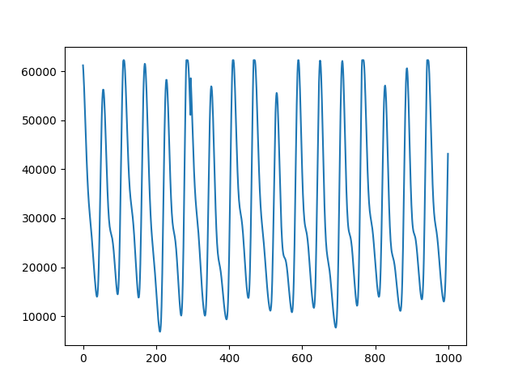
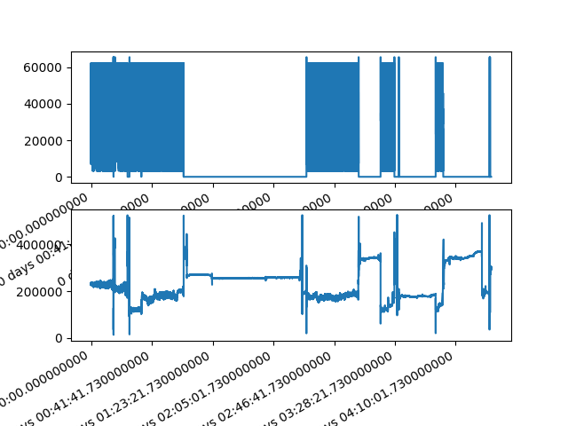

Note
Click here to download the full example code
PPG Pre-processing and SQI Calculations using Pandas on multiple Patients¶
Trimming, Filtering, Segmentation and SQI Calculations utilising Pandas on Multiple Patients
9 10 11 12 | # Code Adapted from:
# https://meta00.github.io/vital_sqi/_examples/others/plot_pipeline_02.html
# AND
# https://meta00.github.io/vital_sqi/_examples/others/plot_read_signal.html#sphx-glr-examples-others-plot-read-signal-py
|
# Importing Libraries
17 18 19 20 21 22 23 24 25 26 27 28 29 30 31 32 33 34 35 36 37 38 39 40 41 42 43 44 45 46 47 48 49 50 51 52 53 54 | # Generic
import os
import numpy as np
import pandas as pd
import matplotlib.pyplot as plt
from scipy import signal
from datetime import datetime
import glob
# Scipy
from scipy.stats import skew, kurtosis, entropy
from scipy import signal as si
# vitalSQI
from vital_sqi.data.signal_io import PPG_reader
import vital_sqi.highlevel_functions.highlevel as sqi_hl
import vital_sqi.data.segment_split as sqi_sg
from vital_sqi.common.rpeak_detection import PeakDetector
from vital_sqi.preprocess.band_filter import BandpassFilter
import vital_sqi.sqi as sq
filepath_start = r'..\..\..\..\OUCRU\01NVa_Dengue\Adults'
filename_Clinical = r'..\..\..\..\OUCRU\Clinical\v0.0.10\01nva_data_stacked_corrected.csv'
files = os.listdir(filepath_start) # fetching the list of records (currently only 3 for processing simplicity)
#Loading Clinical Data to a Dataframe
Clinical = pd.read_csv(filename_Clinical)
#defining constants
trim_amount = 300
hp_filt_params = (1, 1) #(Hz, order)
lp_filt_params = (20, 4) #(Hz, order)
filter_type = 'butter'
segment_length = 30
sampling_rate = 100
TERMINAL = True
|
Out:
Importing the dtw module. When using in academic works please cite:
T. Giorgino. Computing and Visualizing Dynamic Time Warping Alignments in R: The dtw Package.
J. Stat. Soft., doi:10.18637/jss.v031.i07.
Defining Functions¶
59 60 61 62 63 64 65 66 67 68 69 70 71 72 73 74 75 76 77 78 79 80 81 82 83 84 85 86 87 88 89 90 91 92 93 94 95 96 97 98 99 100 101 102 103 104 105 106 107 108 109 110 111 112 113 114 115 116 117 118 119 120 121 122 123 124 125 126 127 128 129 130 131 132 133 134 135 136 137 138 139 140 141 142 143 144 145 146 147 148 149 150 151 152 153 154 155 156 157 158 159 160 161 162 163 164 165 166 167 168 169 170 171 172 173 174 175 176 177 178 179 180 181 182 183 184 185 186 187 188 189 190 191 192 193 194 195 196 197 198 | '''
#find the start of PPG from clinical Data #OLD VERSION, NOW WE ARE USING FILENAME
def find_event_ppg_time(Clinical,Patient):
row = Clinical[(Clinical.study_no == Patient) & (Clinical.column == 'event_ppg') & (Clinical.result == 'True')]
return row['date'].values
'''
#2162 does not have a start date
#find the start of PPG from filename assuming that the clinical data was recorded at +0700 UTC
def find_ppg_start_time(absolute_filename):
absolute_filename = absolute_filename[:-9]
absolute_filename = absolute_filename.replace('T','')
return datetime.strptime(absolute_filename, '%Y%m%d%H%M%S.%f')
#======================================================
# Band-pass filtering
'''
Band-pass filtering can be adjusted, maybe use a lower low-pass
cutoff frequency @15-17Hz
'''
#Band pass filtering function
def bpf(signal):
#OLD IMPLEMENTATION
'''
hp_filt_params = (1, 1) #(Cutoff Hz, order)
lp_filt_params = (20, 4) #( Cutoff Hz, order)
sampling_rate = 100
filter = BandpassFilter(band_type='butter', fs=sampling_rate)
filtered_signal = filter.signal_highpass_filter(signal, cutoff=hp_filt_params[0], order=hp_filt_params[1])
filtered_signal = filter.signal_lowpass_filter(filtered_signal, cutoff=lp_filt_params[0], order=lp_filt_params[1])
'''
#SCIPY IMPLEMENTATION FROM EXAMPLE
# Configure high/low filters
bh, ah = si.butter(1, 1, fs=sampling_rate, btype='high', analog=False)
bl, al = si.butter(4, 20, fs=sampling_rate, btype='low', analog=False)
# Apply filters
filtered_signal = si.filtfilt(bh, ah, signal)
filtered_signal = si.lfilter(bl, al, filtered_signal)
# Return
return filtered_signal
#======================================================
# SQI Functions Definitions
def PeakDetection(x):
detector = PeakDetector()
peaks, troughs = detector.ppg_detector(x, 7) #6 and 7 work the best
return peaks, troughs
#Defining SQI Functions
def snr(x):
#Signal to noise ratio
#needs raw signal
return np.mean(sq.standard_sqi.signal_to_noise_sqi(x))
def zcr(x):
#Zero Crossing Rate
#Needs filtered signal
return 0.5 * np.mean(np.abs(np.diff(np.sign(x))))
def mcr(x):
#Mean Crossing Rate
#needs raw signal
return zcr(x - np.mean(x))
def perfusion(x,y):
return (np.max(y) - np.min(y)) / np.abs(np.mean(x)) * 100
def correlogram(x):
#Correlogram
#Needs filtered signal
return sq.rpeaks_sqi.correlogram_sqi(x)
'''
MSQ values that are being calculated are too small, maybe peakdetectors need
to be revisited?
'''
def msq(x,peaks):
#Dynamic Time Warping
#Requires Filtered Signal and peaks
# Return
return sq.standard_sqi.msq_sqi(x, peaks_1=peaks, peak_detect2=6)
'''
Below function is outputting an error, needs revisiting but not very important for this project
'''
# def dtw(x,troughs):
# #Dynamic Time Warping
# #Requires Filtered Signal and troughs and template selection 0-3 (0-2 for PPG)
# # Per beat
# dtw_list = sq.standard_sqi.per_beat_sqi(sqi_func=sq.dtw_sqi, troughs=troughs, signal=x, taper=True, template_type=1)
# # Return mean and standard deviation
# return [np.mean(dtw_list), np.std(dtw_list)]
#======================================================
# Function Computing SQIs
def sqi_all(x,raw,filtered,peaks,troughs):
#Computing all SQIs using the functions above
# Information
dinfo = {
'PPG_w_s': x.PPG_Datetime.iloc[0], #timedate window start
'PPG_w_f': x.PPG_Datetime.iloc[-1], #timedate window finish
'first': x.idx.iloc[0],
'last': x.idx.iloc[-1],
'skew': skew(x[raw]),
'entropy': entropy(x[raw]),
'kurtosis': kurtosis(x[raw]),
'snr': snr(x[raw]),
'mcr': mcr(x[raw]),
'zcr': zcr(x[filtered]),
'msq': msq(x[filtered],peaks),
'perfusion': perfusion(x[raw], x[filtered]),
'correlogram': correlogram(x[filtered]),
#'dtw': dtw(x[filtered],troughs)
}
'''
When using dtw an empty signal error is presented that
needs fixing, not sure why it does that
'''
# Return
return pd.Series(dinfo)
|
Loop calculating SQIs of multiple records and concatenating results into a single dataframe¶
205 206 207 208 209 210 211 212 213 214 215 216 217 218 219 220 221 222 223 224 225 226 227 228 229 230 231 232 233 234 235 236 237 238 239 240 241 242 243 244 245 246 247 248 249 250 251 252 253 254 255 256 257 258 259 260 261 262 263 264 265 266 267 268 269 270 271 272 273 274 275 276 277 278 279 280 281 282 283 284 285 286 287 288 289 290 291 292 293 294 295 296 297 298 299 300 301 302 303 304 305 306 307 308 309 310 311 312 313 314 315 316 317 318 319 320 321 322 323 324 325 326 327 328 329 330 331 332 333 334 335 336 337 338 339 340 341 342 343 344 345 346 347 348 349 350 351 352 353 354 355 356 357 358 359 360 361 362 363 364 365 366 367 368 369 370 371 372 373 374 375 376 377 378 379 380 381 | '''
Looking through the directories and creating the SQI Dataframe for all patients.
We first calculate each patients SQIs and the carry out the rejection process (latter not yet implementred).
We then concatenate the SQIs along with other descriptors into a single SQI file.
'''
#reading the studies and automatically parsing the files
for i in range(len(files)):
filepath_end = os.listdir(os.path.join(filepath_start,files[i],r'PPG'))
for j in range(len(filepath_end)):
filename = os.path.join(filepath_start,files[i],r'PPG',filepath_end[j])
print("FILENAME=========================================================================")
print(filename)
print("FILENAME=========================================================================")
data = pd.read_csv(filename)
if TERMINAL:
print(data)
#print(data.PLETH)
#print(data.IR_ADC)
#print(data.TIMESTAMP_MS)
#print(data.SPO2_PCT)
signals = data[["PLETH", "IR_ADC"]]
if TERMINAL:
# In the future we will be using plotly, for better graphs but due to processing times
# that change hasn't been made yet
plot_range = np.arange(0,1000,1)
fig, ax = plt.subplots()
ax.plot(plot_range, signals.iloc[0:1000, 0])
# Setting the indexes for the raw data - adopted from examples
pd.Timedelta.__str__ = lambda x: x._repr_base('all')
# Include column with index
signals = signals.reset_index()
#creating the timedelta index using ms
signals['timedelta'] = pd.to_timedelta(data.TIMESTAMP_MS, unit='ms')
'''
#Previous version during lookup in clinical data i.e. ppg_start
#fetching the PPG start date
PPG_start_date = find_ppg_start_time(Clinical, files[i][-8:])
#converting to datetime format
PPG_start_date = datetime.strptime(PPG_start_date[0], '%Y-%m-%d %H:%M:%S')
'''
#finding datetime from filename and converting to datetime format
PPG_start_date = find_ppg_start_time(filepath_end[j])
#creating the PPG Datetime column by taking the datetime and adding the timedeltas to it for each datapoint
signals['PPG_Datetime'] = pd.to_datetime(PPG_start_date)
signals['PPG_Datetime']+= pd.to_timedelta(signals.timedelta)
# Set the timedelta index (keep numeric index too)
signals = signals.set_index('timedelta')
# Rename column to avoid confusion
signals = signals.rename(columns={'index': 'idx'})
if TERMINAL:
print("\n Raw Signals:")
print(signals)
#Plotting
fig, axes = plt.subplots(nrows=2, ncols=1)
axes = axes.flatten()
signals.iloc[:,1].plot(ax=axes[0])
signals.iloc[:,2].plot(ax=axes[1])
# Trimming the first and last 5 minutes
#Defining the 5 minute offset
offset = pd.Timedelta(minutes=5)
#Indexes - adopted from example
idxs = (signals.index > offset) & \
(signals.index < signals.index[-1] - offset)
#Trimming
signals = signals[idxs]
if TERMINAL:
print('\n Truncated Signals:')
print(signals)
# RESAMPLE??
# MISSING DATA INPUT??
# TAPPERING??
#Band-pass filtered signals
signals['PLETH_bpf'] = bpf(signals.iloc[:,1])
signals['IR_ADC_bpf'] = bpf(signals.iloc[:,2])
if TERMINAL:
print('\n Raw and Filtered Signals:')
print(signals)
fig, axes = plt.subplots(nrows=2, ncols=1)
axes = axes.flatten()
signals['PLETH_bpf'].plot(ax=axes[0])
signals['IR_ADC_bpf'].plot(ax=axes[1])
#Calculating peaks and troughs using peakdetector function for both filtered signals
peak_list_0, trough_list_0 = PeakDetection(signals['PLETH_bpf'])
peak_list_1, trough_list_1 = PeakDetection(signals['IR_ADC_bpf'])
# Calculating SQIs for both signals 0 = Pleth and 1 = IR_ADC using both filtered and unfiltered signals
sqis_0 = signals.groupby(pd.Grouper(freq='30s')).apply(lambda x: sqi_all(x, 'PLETH','PLETH_bpf', peak_list_0, trough_list_0))
sqis_1 = signals.groupby(pd.Grouper(freq='30s')).apply(lambda x: sqi_all(x, 'IR_ADC','IR_ADC_bpf', peak_list_1, trough_list_1))
#Displaying the SQIs per signal
print("SQIs Signal 0 (Pleth):")
sqis_0
print(sqis_0)
print("SQIs Signal 1 (IR_ADC):")
sqis_1
print(sqis_1)
#removing duplicates
sqis_1 = sqis_1.drop(['first','last', 'PPG_w_s', 'PPG_w_f'], axis = 1)
# Add window id to identify point of interest more easily
sqis_1['w'] = np.arange(sqis_1.shape[0])
#Final Formatting into a single DataFrame and Saving into a .csv file
#Merging SQIs of different signals from the same record (Pleth and IR_ADC)
Signal_SQIs = sqis_0.merge(sqis_1, on='timedelta', suffixes=('_0', '_1'))
#Automatically fetching the study_no from the filename and including it in the DataFrame
Signal_SQIs['study_no'] = files[i][-8:]
Signal_SQIs['study_no_rec'] = j
#also doing it for the raw signals
signals['study_no'] = files[i][-8:]
signals['study_no_rec'] = j
if TERMINAL:
print('\n Individual SQI Check:')
print(Signal_SQIs)
'''
Discarding process to be added below.
'''
#RULE
Discarding_rules = list(zip(*[(Signal_SQIs['skew_0'].between(-2, -1), True), (Signal_SQIs['skew_0'].between(0, 1), True)]))
# Apply rule (default False)
Signal_SQIs['keep'] = np.select(Discarding_rules[0], Discarding_rules[1], False)
# Overwrite and keep all
Signal_SQIs['keep'] = True
# Keep all whose keep column value is true
Signal_SQIs = Signal_SQIs[Signal_SQIs.keep]
#concatenating into a single dataframe for all studies
if i == 0 and j == 0:
Complete_SQIs = Signal_SQIs
Raw_signals = signals
else:
Complete_SQIs = pd.concat([Complete_SQIs, Signal_SQIs])
Raw_signals = pd.concat([Raw_signals, signals])
#Saving to csv format
Complete_SQIs.to_csv(r'..\..\..\..\OUCRU\Outputs\Complete_SQIs.csv')
Raw_signals.to_csv(r'..\..\..\..\OUCRU\Outputs\Raw_signals.csv')
|


- 
- 


Out:
FILENAME=========================================================================
..\..\..\..\OUCRU\01NVa_Dengue\Adults\01NVa-003-2009\PPG\20200728T155920.094+0700.csv
FILENAME=========================================================================
TIMESTAMP_MS COUNTER DEVICE_ID PULSE_BPM SPO2_PCT SPO2_STATUS PLETH BATTERY_PCT RED_ADC IR_ADC PERFUSION_INDEX
0 0 9 1 75 99.0 0 45065 99.9 127896 129705 0.5
1 10 10 1 75 99.0 0 44683 99.9 127908 129796 0.5
2 20 11 1 75 99.0 0 44244 99.9 127903 129793 0.5
3 30 12 1 75 99.0 0 43776 99.9 127896 129789 0.5
4 40 13 1 75 99.0 0 43335 99.9 127899 129789 0.5
... ... ... ... ... ... ... ... ... ... ... ...
4646515 46474170 4647426 1 96 99.9 0 25317 23.7 163170 234241 0.9
4646516 46474180 4647427 1 96 99.9 0 25094 23.7 163183 234256 0.9
4646517 46474190 4647428 1 96 99.9 0 24905 23.7 163164 234217 0.9
4646518 46474200 4647429 1 96 99.9 0 24788 23.7 163184 234239 0.9
4646519 46474210 4647430 1 96 99.9 0 24705 23.7 163188 234287 0.9
[4646520 rows x 11 columns]
Raw Signals:
idx PLETH IR_ADC PPG_Datetime
timedelta
0 days 00:00:00 0 45065 129705 2020-07-28 15:59:20.094
0 days 00:00:00.010000 1 44683 129796 2020-07-28 15:59:20.104
0 days 00:00:00.020000 2 44244 129793 2020-07-28 15:59:20.114
0 days 00:00:00.030000 3 43776 129789 2020-07-28 15:59:20.124
0 days 00:00:00.040000 4 43335 129789 2020-07-28 15:59:20.134
... ... ... ... ...
0 days 12:54:34.170000 4646515 25317 234241 2020-07-29 04:53:54.264
0 days 12:54:34.180000 4646516 25094 234256 2020-07-29 04:53:54.274
0 days 12:54:34.190000 4646517 24905 234217 2020-07-29 04:53:54.284
0 days 12:54:34.200000 4646518 24788 234239 2020-07-29 04:53:54.294
0 days 12:54:34.210000 4646519 24705 234287 2020-07-29 04:53:54.304
[4646520 rows x 4 columns]
Truncated Signals:
idx PLETH IR_ADC PPG_Datetime
timedelta
0 days 00:05:00.010000 29913 10803 135438 2020-07-28 16:04:20.104
0 days 00:05:00.020000 29914 10609 135067 2020-07-28 16:04:20.114
0 days 00:05:00.030000 29915 10659 134754 2020-07-28 16:04:20.124
0 days 00:05:00.040000 29916 10983 134473 2020-07-28 16:04:20.134
0 days 00:05:00.050000 29917 11734 134286 2020-07-28 16:04:20.144
... ... ... ... ...
0 days 12:49:34.160000 4616516 46632 223707 2020-07-29 04:48:54.254
0 days 12:49:34.170000 4616517 47157 223733 2020-07-29 04:48:54.264
0 days 12:49:34.180000 4616518 47404 223765 2020-07-29 04:48:54.274
0 days 12:49:34.190000 4616519 47372 223763 2020-07-29 04:48:54.284
0 days 12:49:34.200000 4616520 47131 223685 2020-07-29 04:48:54.294
[4586608 rows x 4 columns]
Raw and Filtered Signals:
idx PLETH IR_ADC PPG_Datetime PLETH_bpf IR_ADC_bpf
timedelta
0 days 00:05:00.010000 29913 10803 135438 2020-07-28 16:04:20.104 -347.936641 -0.439129
0 days 00:05:00.020000 29914 10609 135067 2020-07-28 16:04:20.114 -2051.585777 -16.222886
0 days 00:05:00.030000 29915 10659 134754 2020-07-28 16:04:20.124 -5424.102666 -96.673830
0 days 00:05:00.040000 29916 10983 134473 2020-07-28 16:04:20.134 -8735.859953 -286.584242
0 days 00:05:00.050000 29917 11734 134286 2020-07-28 16:04:20.144 -10096.052116 -548.629881
... ... ... ... ... ... ...
0 days 12:49:34.160000 4616516 46632 223707 2020-07-29 04:48:54.254 3724.301504 -433.122809
0 days 12:49:34.170000 4616517 47157 223733 2020-07-29 04:48:54.264 4093.345682 -345.673803
0 days 12:49:34.180000 4616518 47404 223765 2020-07-29 04:48:54.274 4120.601540 -255.822729
0 days 12:49:34.190000 4616519 47372 223763 2020-07-29 04:48:54.284 3836.250019 -188.410883
0 days 12:49:34.200000 4616520 47131 223685 2020-07-29 04:48:54.294 3276.562309 -155.288825
[4586608 rows x 6 columns]
d:\files\desktop\dissertation icl\env\lib\site-packages\statsmodels\tsa\stattools.py:667: FutureWarning: fft=True will become the default after the release of the 0.12 release of statsmodels. To suppress this warning, explicitly set fft=False.
warnings.warn(
SQIs Signal 0 (Pleth):
PPG_w_s PPG_w_f first ... msq perfusion correlogram
timedelta ...
0 days 00:05:00.010000 2020-07-28 16:04:20.104 2020-07-28 16:04:50.094 29913 ... 0.000670 136.396730 [72, 144, 216, 0.9129586116630783, 0.833755242...
0 days 00:05:30.010000 2020-07-28 16:04:50.104 2020-07-28 16:05:20.094 32913 ... 0.000024 135.264839 [73, 146, 218, 0.8836968954103781, 0.767674951...
0 days 00:06:00.010000 2020-07-28 16:05:20.104 2020-07-28 16:05:50.094 35913 ... 0.000016 131.393577 [79, 158, 238, 0.7515617345803158, 0.609377282...
0 days 00:06:30.010000 2020-07-28 16:05:50.104 2020-07-28 16:06:20.094 38913 ... 0.000024 116.280886 [72, 145, 218, 0.8423592808618892, 0.686354752...
0 days 00:07:00.010000 2020-07-28 16:06:20.104 2020-07-28 16:06:50.094 41913 ... 0.000040 118.980781 [72, 145, 219, 0.8267230004443079, 0.667913559...
... ... ... ... ... ... ... ...
0 days 12:47:30.010000 2020-07-29 04:46:50.104 2020-07-29 04:47:20.094 4604101 ... 0.000008 121.552320 [66, 131, 200, 0.7251740050080869, 0.376853581...
0 days 12:48:00.010000 2020-07-29 04:47:20.104 2020-07-29 04:47:50.094 4607101 ... 0.000048 121.494581 [66, 131, 197, 0.7232446685511037, 0.623587412...
0 days 12:48:30.010000 2020-07-29 04:47:50.104 2020-07-29 04:48:20.094 4610101 ... 0.000008 133.937374 [65, 131, 197, 0.8721573412701865, 0.674853664...
0 days 12:49:00.010000 2020-07-29 04:48:20.104 2020-07-29 04:48:50.094 4613101 ... 0.000008 132.029448 [63, 124, 185, 0.7649171387035625, 0.470840172...
0 days 12:49:30.010000 2020-07-29 04:48:50.104 2020-07-29 04:48:54.294 4616101 ... 0.000008 100.188599 [60, 120, 180, 0.7619610520523479, 0.598062551...
[1530 rows x 13 columns]
SQIs Signal 1 (IR_ADC):
PPG_w_s PPG_w_f first ... msq perfusion correlogram
timedelta ...
0 days 00:05:00.010000 2020-07-28 16:04:20.104 2020-07-28 16:04:50.094 29913 ... 0.000403 1.705650 [72, 144, 216, 0.8856102490591679, 0.794003526...
0 days 00:05:30.010000 2020-07-28 16:04:50.104 2020-07-28 16:05:20.094 32913 ... 0.000005 1.597326 [73, 145, 218, 0.8639663556739559, 0.743705493...
0 days 00:06:00.010000 2020-07-28 16:05:20.104 2020-07-28 16:05:50.094 35913 ... 0.000014 6.113822 [77, 154, 229, 0.3089570367797498, 0.333969613...
0 days 00:06:30.010000 2020-07-28 16:05:50.104 2020-07-28 16:06:20.094 38913 ... 0.000024 1.795996 [72, 145, 218, 0.7946297724004696, 0.627452938...
0 days 00:07:00.010000 2020-07-28 16:06:20.104 2020-07-28 16:06:50.094 41913 ... 0.000034 1.686847 [73, 146, 220, 0.7899852276271346, 0.640349794...
... ... ... ... ... ... ... ...
0 days 12:47:30.010000 2020-07-29 04:46:50.104 2020-07-29 04:47:20.094 4604101 ... 0.000024 1.502201 [67, 135, 205, 0.6624446421176999, 0.344118629...
0 days 12:48:00.010000 2020-07-29 04:47:20.104 2020-07-29 04:47:50.094 4607101 ... 0.000010 4.291637 [66, 128, 192, 0.21797261139656024, 0.30192510...
0 days 12:48:30.010000 2020-07-29 04:47:50.104 2020-07-29 04:48:20.094 4610101 ... 0.000019 1.355389 [66, 132, 198, 0.8366592728879606, 0.633512163...
0 days 12:49:00.010000 2020-07-29 04:48:20.104 2020-07-29 04:48:50.094 4613101 ... 0.000034 1.498001 [62, 124, 185, 0.7827142477024097, 0.551712347...
0 days 12:49:30.010000 2020-07-29 04:48:50.104 2020-07-29 04:48:54.294 4616101 ... 0.000005 1.398639 [60, 120, 179, 0.7932304299133978, 0.617863646...
[1530 rows x 13 columns]
Individual SQI Check:
PPG_w_s PPG_w_f first ... w study_no study_no_rec
timedelta ...
0 days 00:05:00.010000 2020-07-28 16:04:20.104 2020-07-28 16:04:50.094 29913 ... 0 003-2009 0
0 days 00:05:30.010000 2020-07-28 16:04:50.104 2020-07-28 16:05:20.094 32913 ... 1 003-2009 0
0 days 00:06:00.010000 2020-07-28 16:05:20.104 2020-07-28 16:05:50.094 35913 ... 2 003-2009 0
0 days 00:06:30.010000 2020-07-28 16:05:50.104 2020-07-28 16:06:20.094 38913 ... 3 003-2009 0
0 days 00:07:00.010000 2020-07-28 16:06:20.104 2020-07-28 16:06:50.094 41913 ... 4 003-2009 0
... ... ... ... ... ... ... ...
0 days 12:47:30.010000 2020-07-29 04:46:50.104 2020-07-29 04:47:20.094 4604101 ... 1525 003-2009 0
0 days 12:48:00.010000 2020-07-29 04:47:20.104 2020-07-29 04:47:50.094 4607101 ... 1526 003-2009 0
0 days 12:48:30.010000 2020-07-29 04:47:50.104 2020-07-29 04:48:20.094 4610101 ... 1527 003-2009 0
0 days 12:49:00.010000 2020-07-29 04:48:20.104 2020-07-29 04:48:50.094 4613101 ... 1528 003-2009 0
0 days 12:49:30.010000 2020-07-29 04:48:50.104 2020-07-29 04:48:54.294 4616101 ... 1529 003-2009 0
[1530 rows x 25 columns]
FILENAME=========================================================================
..\..\..\..\OUCRU\01NVa_Dengue\Adults\01NVa-003-2012\PPG\20200811T162822.961+0700.csv
FILENAME=========================================================================
TIMESTAMP_MS COUNTER DEVICE_ID PULSE_BPM SPO2_PCT SPO2_STATUS PLETH BATTERY_PCT RED_ADC IR_ADC PERFUSION_INDEX
0 0 9 1 93 100.0 0 17712 95.4 144630 142842 1.7
1 10 10 1 93 100.0 0 16585 95.4 144629 142896 1.7
2 20 11 1 93 100.0 0 15577 95.4 144654 142845 1.7
3 30 12 1 93 100.0 0 14607 95.4 144651 142925 1.7
4 40 13 1 93 100.0 0 13718 95.4 144591 142793 1.7
... ... ... ... ... ... ... ... ... ... ... ...
5176629 51771580 5177167 1 255 12.7 2 0 5.7 320749 207341 0.0
5176630 51771590 5177168 1 255 12.7 2 0 5.7 320770 207359 0.0
5176631 51771600 5177169 1 255 12.7 2 0 5.7 320730 207331 0.0
5176632 51771610 5177170 1 255 12.7 2 0 5.7 320758 207370 0.0
5176633 51771620 5177171 1 255 12.7 2 0 5.7 320757 207338 0.0
[5176634 rows x 11 columns]
Raw Signals:
idx PLETH IR_ADC PPG_Datetime
timedelta
0 days 00:00:00 0 17712 142842 2020-08-11 16:28:22.961
0 days 00:00:00.010000 1 16585 142896 2020-08-11 16:28:22.971
0 days 00:00:00.020000 2 15577 142845 2020-08-11 16:28:22.981
0 days 00:00:00.030000 3 14607 142925 2020-08-11 16:28:22.991
0 days 00:00:00.040000 4 13718 142793 2020-08-11 16:28:23.001
... ... ... ... ...
0 days 14:22:51.580000 5176629 0 207341 2020-08-12 06:51:14.541
0 days 14:22:51.590000 5176630 0 207359 2020-08-12 06:51:14.551
0 days 14:22:51.600000 5176631 0 207331 2020-08-12 06:51:14.561
0 days 14:22:51.610000 5176632 0 207370 2020-08-12 06:51:14.571
0 days 14:22:51.620000 5176633 0 207338 2020-08-12 06:51:14.581
[5176634 rows x 4 columns]
Truncated Signals:
idx PLETH IR_ADC PPG_Datetime
timedelta
0 days 00:05:00.010000 29913 22849 151983 2020-08-11 16:33:22.971
0 days 00:05:00.020000 29914 22570 151955 2020-08-11 16:33:22.981
0 days 00:05:00.030000 29915 22477 152053 2020-08-11 16:33:22.991
0 days 00:05:00.040000 29916 22561 152099 2020-08-11 16:33:23.001
0 days 00:05:00.050000 29917 22815 152190 2020-08-11 16:33:23.011
... ... ... ... ...
0 days 14:17:51.570000 5146628 0 207405 2020-08-12 06:46:14.531
0 days 14:17:51.580000 5146629 0 207399 2020-08-12 06:46:14.541
0 days 14:17:51.590000 5146630 0 207395 2020-08-12 06:46:14.551
0 days 14:17:51.600000 5146631 0 207406 2020-08-12 06:46:14.561
0 days 14:17:51.610000 5146632 0 207389 2020-08-12 06:46:14.571
[5116720 rows x 4 columns]
Raw and Filtered Signals:
idx PLETH IR_ADC PPG_Datetime PLETH_bpf IR_ADC_bpf
timedelta
0 days 00:05:00.010000 29913 22849 151983 2020-08-11 16:33:22.971 -1.830181e+02 -139.490636
0 days 00:05:00.020000 29914 22570 151955 2020-08-11 16:33:22.981 -1.084809e+03 -817.097174
0 days 00:05:00.030000 29915 22477 152053 2020-08-11 16:33:22.991 -2.888813e+03 -2136.606414
0 days 00:05:00.040000 29916 22561 152099 2020-08-11 16:33:23.001 -4.697836e+03 -3383.942991
0 days 00:05:00.050000 29917 22815 152190 2020-08-11 16:33:23.011 -5.496911e+03 -3835.189663
... ... ... ... ... ... ...
0 days 14:17:51.570000 5146628 0 207405 2020-08-12 06:46:14.531 4.940656e-324 9.769716
0 days 14:17:51.580000 5146629 0 207399 2020-08-12 06:46:14.541 0.000000e+00 7.184997
0 days 14:17:51.590000 5146630 0 207395 2020-08-12 06:46:14.551 -4.940656e-324 8.313185
0 days 14:17:51.600000 5146631 0 207406 2020-08-12 06:46:14.561 -4.940656e-324 10.441468
0 days 14:17:51.610000 5146632 0 207389 2020-08-12 06:46:14.571 0.000000e+00 11.381069
[5116720 rows x 6 columns]
d:\files\desktop\dissertation icl\env\lib\site-packages\statsmodels\tsa\stattools.py:667: FutureWarning: fft=True will become the default after the release of the 0.12 release of statsmodels. To suppress this warning, explicitly set fft=False.
warnings.warn(
SQIs Signal 0 (Pleth):
PPG_w_s PPG_w_f first ... msq perfusion correlogram
timedelta ...
0 days 00:05:00.010000 2020-08-11 16:33:22.971 2020-08-11 16:33:52.961 29913 ... 0.001235 196.041422 [63, 95, 127, 0.5208701915801449, -0.253228754...
0 days 00:05:30.010000 2020-08-11 16:33:52.971 2020-08-11 16:34:22.961 32913 ... 0.000027 149.085079 [31, 62, 92, -0.3999978218123727, 0.9429205226...
0 days 00:06:00.010000 2020-08-11 16:34:22.971 2020-08-11 16:34:52.961 35913 ... 0.000066 122.743553 [30, 64, 128, -0.46548729589614796, 0.92929807...
0 days 00:06:30.010000 2020-08-11 16:34:52.971 2020-08-11 16:35:22.961 38913 ... 0.000053 134.256143 [31, 64, 95, -0.40929204537499414, 0.951512171...
0 days 00:07:00.010000 2020-08-11 16:35:22.971 2020-08-11 16:35:52.961 41913 ... 0.000013 144.069256 [31, 63, 94, -0.4090411879992332, 0.9665303924...
... ... ... ... ... ... ... ...
0 days 14:15:30.010000 2020-08-12 06:43:52.971 2020-08-12 06:44:22.961 5132472 ... 0.000213 inf []
0 days 14:16:00.010000 2020-08-12 06:44:22.971 2020-08-12 06:44:52.961 5135472 ... 0.000213 inf []
0 days 14:16:30.010000 2020-08-12 06:44:52.971 2020-08-12 06:45:22.961 5138472 ... 0.000213 inf []
0 days 14:17:00.010000 2020-08-12 06:45:22.971 2020-08-12 06:45:52.961 5141472 ... 0.000213 inf []
0 days 14:17:30.010000 2020-08-12 06:45:52.971 2020-08-12 06:46:14.571 5144472 ... 0.000146 inf []
[1706 rows x 13 columns]
SQIs Signal 1 (IR_ADC):
PPG_w_s PPG_w_f first ... msq perfusion correlogram
timedelta ...
0 days 00:05:00.010000 2020-08-11 16:33:22.971 2020-08-11 16:33:52.961 29913 ... 0.000220 179.030288 [39, 66, 87, -0.04351235688799981, -0.06876880...
0 days 00:05:30.010000 2020-08-11 16:33:52.971 2020-08-11 16:34:22.961 32913 ... 0.000006 7.522155 [31, 61, 92, -0.37061955281449915, 0.917735047...
0 days 00:06:00.010000 2020-08-11 16:34:22.971 2020-08-11 16:34:52.961 35913 ... 0.000010 4.760179 [64, 128, 193, 0.930280872709388, 0.8252839395...
0 days 00:06:30.010000 2020-08-11 16:34:52.971 2020-08-11 16:35:22.961 38913 ... 0.000004 4.876120 [63, 127, 190, 0.9404789519188358, 0.870332124...
0 days 00:07:00.010000 2020-08-11 16:35:22.971 2020-08-11 16:35:52.961 41913 ... 0.000000 5.085177 [63, 126, 189, 0.9605322200262248, 0.915669151...
... ... ... ... ... ... ... ...
0 days 14:15:30.010000 2020-08-12 06:43:52.971 2020-08-12 06:44:22.961 5132472 ... 0.000033 0.060654 [6, 11, 18, -0.0019374058650579195, -0.0017696...
0 days 14:16:00.010000 2020-08-12 06:44:22.971 2020-08-12 06:44:52.961 5135472 ... 0.000039 0.050310 [6, 11, 20, 0.039241068108281145, 0.0041982087...
0 days 14:16:30.010000 2020-08-12 06:44:52.971 2020-08-12 06:45:22.961 5138472 ... 0.000033 0.056490 [6, 10, 18, -0.02065026993537243, -0.034124123...
0 days 14:17:00.010000 2020-08-12 06:45:22.971 2020-08-12 06:45:52.961 5141472 ... 0.000027 0.068543 [6, 11, 15, -0.0005607782359069993, -0.0363094...
0 days 14:17:30.010000 2020-08-12 06:45:52.971 2020-08-12 06:46:14.571 5144472 ... 0.000026 0.057402 [6, 10, 20, 0.014910364149073808, 0.0444651847...
[1706 rows x 13 columns]
Individual SQI Check:
PPG_w_s PPG_w_f first ... w study_no study_no_rec
timedelta ...
0 days 00:05:00.010000 2020-08-11 16:33:22.971 2020-08-11 16:33:52.961 29913 ... 0 003-2012 0
0 days 00:05:30.010000 2020-08-11 16:33:52.971 2020-08-11 16:34:22.961 32913 ... 1 003-2012 0
0 days 00:06:00.010000 2020-08-11 16:34:22.971 2020-08-11 16:34:52.961 35913 ... 2 003-2012 0
0 days 00:06:30.010000 2020-08-11 16:34:52.971 2020-08-11 16:35:22.961 38913 ... 3 003-2012 0
0 days 00:07:00.010000 2020-08-11 16:35:22.971 2020-08-11 16:35:52.961 41913 ... 4 003-2012 0
... ... ... ... ... ... ... ...
0 days 14:15:30.010000 2020-08-12 06:43:52.971 2020-08-12 06:44:22.961 5132472 ... 1701 003-2012 0
0 days 14:16:00.010000 2020-08-12 06:44:22.971 2020-08-12 06:44:52.961 5135472 ... 1702 003-2012 0
0 days 14:16:30.010000 2020-08-12 06:44:52.971 2020-08-12 06:45:22.961 5138472 ... 1703 003-2012 0
0 days 14:17:00.010000 2020-08-12 06:45:22.971 2020-08-12 06:45:52.961 5141472 ... 1704 003-2012 0
0 days 14:17:30.010000 2020-08-12 06:45:52.971 2020-08-12 06:46:14.571 5144472 ... 1705 003-2012 0
[1706 rows x 25 columns]
FILENAME=========================================================================
..\..\..\..\OUCRU\01NVa_Dengue\Adults\01NVa-003-2023\PPG\20201005T104333.637+0700.csv
FILENAME=========================================================================
TIMESTAMP_MS COUNTER DEVICE_ID PULSE_BPM SPO2_PCT SPO2_STATUS PLETH BATTERY_PCT RED_ADC IR_ADC PERFUSION_INDEX
0 0 9 1 103 96.4 8 61204 77.9 248927 228608 3.6
1 10 10 1 103 96.4 0 60026 77.9 249185 229018 3.6
2 20 11 1 103 96.4 0 58501 77.9 249414 229368 3.6
3 30 12 1 103 96.4 0 56707 77.9 249652 229681 3.6
4 40 13 1 103 96.4 0 54720 77.9 249835 229938 3.6
... ... ... ... ... ... ... ... ... ... ... ...
1645894 16460670 1646076 1 255 12.7 2 0 53.5 218079 292095 0.0
1645895 16460680 1646077 1 255 12.7 2 0 53.5 218088 292039 0.0
1645896 16460690 1646078 1 255 12.7 2 0 53.5 218046 291989 0.0
1645897 16460700 1646079 1 255 12.7 2 0 53.5 218004 291967 0.0
1645898 16460710 1646080 1 255 12.7 2 0 53.5 217989 291960 0.0
[1645899 rows x 11 columns]
Raw Signals:
idx PLETH IR_ADC PPG_Datetime
timedelta
0 days 00:00:00 0 61204 228608 2020-10-05 10:43:33.637
0 days 00:00:00.010000 1 60026 229018 2020-10-05 10:43:33.647
0 days 00:00:00.020000 2 58501 229368 2020-10-05 10:43:33.657
0 days 00:00:00.030000 3 56707 229681 2020-10-05 10:43:33.667
0 days 00:00:00.040000 4 54720 229938 2020-10-05 10:43:33.677
... ... ... ... ...
0 days 04:34:20.670000 1645894 0 292095 2020-10-05 15:17:54.307
0 days 04:34:20.680000 1645895 0 292039 2020-10-05 15:17:54.317
0 days 04:34:20.690000 1645896 0 291989 2020-10-05 15:17:54.327
0 days 04:34:20.700000 1645897 0 291967 2020-10-05 15:17:54.337
0 days 04:34:20.710000 1645898 0 291960 2020-10-05 15:17:54.347
[1645899 rows x 4 columns]
Truncated Signals:
idx PLETH IR_ADC PPG_Datetime
timedelta
0 days 00:05:00.010000 29828 28050 235273 2020-10-05 10:48:33.647
0 days 00:05:00.020000 29829 27856 235524 2020-10-05 10:48:33.657
0 days 00:05:00.030000 29830 27644 235905 2020-10-05 10:48:33.667
0 days 00:05:00.040000 29831 27383 236177 2020-10-05 10:48:33.677
0 days 00:05:00.050000 29832 27040 236387 2020-10-05 10:48:33.687
... ... ... ... ...
0 days 04:29:20.660000 1615893 0 192521 2020-10-05 15:12:54.297
0 days 04:29:20.670000 1615894 0 192512 2020-10-05 15:12:54.307
0 days 04:29:20.680000 1615895 0 192526 2020-10-05 15:12:54.317
0 days 04:29:20.690000 1615896 0 192496 2020-10-05 15:12:54.327
0 days 04:29:20.700000 1615897 0 192488 2020-10-05 15:12:54.337
[1586070 rows x 4 columns]
Raw and Filtered Signals:
idx PLETH IR_ADC PPG_Datetime PLETH_bpf IR_ADC_bpf
timedelta
0 days 00:05:00.010000 29828 28050 235273 2020-10-05 10:48:33.647 -1.572578e+01 57.125330
0 days 00:05:00.020000 29829 27856 235524 2020-10-05 10:48:33.657 -9.616154e+01 341.649562
0 days 00:05:00.030000 29830 27644 235905 2020-10-05 10:48:33.667 -2.698216e+02 931.142435
0 days 00:05:00.040000 29831 27383 236177 2020-10-05 10:48:33.677 -4.812940e+02 1589.369194
0 days 00:05:00.050000 29832 27040 236387 2020-10-05 10:48:33.687 -6.631190e+02 2024.334224
... ... ... ... ... ... ...
0 days 04:29:20.660000 1615893 0 192521 2020-10-05 15:12:54.297 4.940656e-324 51.498975
0 days 04:29:20.670000 1615894 0 192512 2020-10-05 15:12:54.307 0.000000e+00 56.147768
0 days 04:29:20.680000 1615895 0 192526 2020-10-05 15:12:54.317 -4.940656e-324 52.476092
0 days 04:29:20.690000 1615896 0 192496 2020-10-05 15:12:54.327 -4.940656e-324 53.211773
0 days 04:29:20.700000 1615897 0 192488 2020-10-05 15:12:54.337 0.000000e+00 55.457768
[1586070 rows x 6 columns]
d:\files\desktop\dissertation icl\env\lib\site-packages\statsmodels\tsa\stattools.py:667: FutureWarning: fft=True will become the default after the release of the 0.12 release of statsmodels. To suppress this warning, explicitly set fft=False.
warnings.warn(
SQIs Signal 0 (Pleth):
PPG_w_s PPG_w_f first ... msq perfusion correlogram
timedelta ...
0 days 00:05:00.010000 2020-10-05 10:48:33.647 2020-10-05 10:49:03.637 29828 ... 0.005445 149.993862 [28, 57, 85, -0.4311913862708776, 0.9593097095...
0 days 00:05:30.010000 2020-10-05 10:49:03.647 2020-10-05 10:49:33.637 32828 ... 0.000059 154.124474 [29, 58, 87, -0.4645015963529962, 0.9424118313...
0 days 00:06:00.010000 2020-10-05 10:49:33.647 2020-10-05 10:50:03.637 35828 ... 0.000178 161.155871 [29, 59, 118, -0.4777964284638418, 0.915370055...
0 days 00:06:30.010000 2020-10-05 10:50:03.647 2020-10-05 10:50:33.637 38828 ... 0.000000 134.442018 [30, 60, 90, -0.46926954056482284, 0.930537679...
0 days 00:07:00.010000 2020-10-05 10:50:33.647 2020-10-05 10:51:03.637 41828 ... 0.000118 129.896521 [30, 60, 91, -0.4391028059967023, 0.9520396572...
... ... ... ... ... ... ... ...
0 days 04:27:00.010000 2020-10-05 15:10:33.647 2020-10-05 15:11:03.637 1601828 ... 0.000533 inf []
0 days 04:27:30.010000 2020-10-05 15:11:03.647 2020-10-05 15:11:33.637 1604828 ... 0.000533 inf []
0 days 04:28:00.010000 2020-10-05 15:11:33.647 2020-10-05 15:12:03.637 1607828 ... 0.000533 inf []
0 days 04:28:30.010000 2020-10-05 15:12:03.647 2020-10-05 15:12:33.637 1610828 ... 0.000533 inf []
0 days 04:29:00.010000 2020-10-05 15:12:33.647 2020-10-05 15:12:54.337 1613828 ... 0.000237 inf []
[529 rows x 13 columns]
SQIs Signal 1 (IR_ADC):
PPG_w_s PPG_w_f first ... msq perfusion correlogram
timedelta ...
0 days 00:05:00.010000 2020-10-05 10:48:33.647 2020-10-05 10:49:03.637 29828 ... 0.000633 5.545433 [28, 57, 85, -0.3442286386976277, 0.9502389226...
0 days 00:05:30.010000 2020-10-05 10:49:03.647 2020-10-05 10:49:33.637 32828 ... 0.000013 6.287074 [29, 58, 87, -0.3729207244671429, 0.9275563966...
0 days 00:06:00.010000 2020-10-05 10:49:33.647 2020-10-05 10:50:03.637 35828 ... 0.000000 6.217779 [29, 59, 119, -0.4216490315858902, 0.884849137...
0 days 00:06:30.010000 2020-10-05 10:50:03.647 2020-10-05 10:50:33.637 38828 ... 0.000013 5.592598 [29, 60, 89, -0.39893160629364444, 0.908163148...
0 days 00:07:00.010000 2020-10-05 10:50:33.647 2020-10-05 10:51:03.637 41828 ... 0.000000 5.642681 [30, 60, 90, -0.38292355824901547, 0.940882638...
... ... ... ... ... ... ... ...
0 days 04:27:00.010000 2020-10-05 15:10:33.647 2020-10-05 15:11:03.637 1601828 ... 0.000106 0.139142 [10, 20, 30, 0.24999097024119837, 0.0652762873...
0 days 04:27:30.010000 2020-10-05 15:11:03.647 2020-10-05 15:11:33.637 1604828 ... 0.000106 35.318908 [19, 43, 63, 0.38875797008429985, 0.0099548178...
0 days 04:28:00.010000 2020-10-05 15:11:33.647 2020-10-05 15:12:03.637 1607828 ... 0.000046 28.154580 [41, 96, 176, 0.09191754895535724, 0.090622537...
0 days 04:28:30.010000 2020-10-05 15:12:03.647 2020-10-05 15:12:33.637 1610828 ... 0.000086 13.530920 [11, 28, 42, 0.18830579194696226, -0.164938805...
0 days 04:29:00.010000 2020-10-05 15:12:33.647 2020-10-05 15:12:54.337 1613828 ... 0.000073 0.079649 [6, 11, 26, 0.26458307765473266, 0.17142824625...
[529 rows x 13 columns]
Individual SQI Check:
PPG_w_s PPG_w_f first ... w study_no study_no_rec
timedelta ...
0 days 00:05:00.010000 2020-10-05 10:48:33.647 2020-10-05 10:49:03.637 29828 ... 0 003-2023 0
0 days 00:05:30.010000 2020-10-05 10:49:03.647 2020-10-05 10:49:33.637 32828 ... 1 003-2023 0
0 days 00:06:00.010000 2020-10-05 10:49:33.647 2020-10-05 10:50:03.637 35828 ... 2 003-2023 0
0 days 00:06:30.010000 2020-10-05 10:50:03.647 2020-10-05 10:50:33.637 38828 ... 3 003-2023 0
0 days 00:07:00.010000 2020-10-05 10:50:33.647 2020-10-05 10:51:03.637 41828 ... 4 003-2023 0
... ... ... ... ... ... ... ...
0 days 04:27:00.010000 2020-10-05 15:10:33.647 2020-10-05 15:11:03.637 1601828 ... 524 003-2023 0
0 days 04:27:30.010000 2020-10-05 15:11:03.647 2020-10-05 15:11:33.637 1604828 ... 525 003-2023 0
0 days 04:28:00.010000 2020-10-05 15:11:33.647 2020-10-05 15:12:03.637 1607828 ... 526 003-2023 0
0 days 04:28:30.010000 2020-10-05 15:12:03.647 2020-10-05 15:12:33.637 1610828 ... 527 003-2023 0
0 days 04:29:00.010000 2020-10-05 15:12:33.647 2020-10-05 15:12:54.337 1613828 ... 528 003-2023 0
[529 rows x 25 columns]
FILENAME=========================================================================
..\..\..\..\OUCRU\01NVa_Dengue\Adults\01NVa-003-2023\PPG\20201005T151831.820+0700.csv
FILENAME=========================================================================
TIMESTAMP_MS COUNTER DEVICE_ID PULSE_BPM SPO2_PCT SPO2_STATUS PLETH BATTERY_PCT RED_ADC IR_ADC PERFUSION_INDEX
0 0 1646508 1 255 12.7 2 0 53.5 230093 318124 0.0
1 10 1646509 1 255 12.7 2 0 53.5 230058 318053 0.0
2 20 1646510 1 255 12.7 2 0 53.5 230073 318002 0.0
3 30 1646511 1 255 12.7 2 0 53.5 230119 317984 0.0
4 40 1646512 1 255 12.7 2 0 53.5 230143 318013 0.0
... ... ... ... ... ... ... ... ... ... ... ...
2122122 21222950 3768803 1 85 100.0 0 20002 5.7 245186 186674 2.1
2122123 21222960 3768804 1 85 100.0 0 19207 5.7 245249 186795 2.1
2122124 21222970 3768805 1 85 100.0 0 18412 5.7 245273 186853 2.1
2122125 21222980 3768806 1 85 100.0 0 17589 5.7 245340 186961 2.1
2122126 21222990 3768807 1 85 100.0 0 16740 5.7 245387 187027 2.1
[2122127 rows x 11 columns]
Raw Signals:
idx PLETH IR_ADC PPG_Datetime
timedelta
0 days 00:00:00 0 0 318124 2020-10-05 15:18:31.820
0 days 00:00:00.010000 1 0 318053 2020-10-05 15:18:31.830
0 days 00:00:00.020000 2 0 318002 2020-10-05 15:18:31.840
0 days 00:00:00.030000 3 0 317984 2020-10-05 15:18:31.850
0 days 00:00:00.040000 4 0 318013 2020-10-05 15:18:31.860
... ... ... ... ...
0 days 05:53:42.950000 2122122 20002 186674 2020-10-05 21:12:14.770
0 days 05:53:42.960000 2122123 19207 186795 2020-10-05 21:12:14.780
0 days 05:53:42.970000 2122124 18412 186853 2020-10-05 21:12:14.790
0 days 05:53:42.980000 2122125 17589 186961 2020-10-05 21:12:14.800
0 days 05:53:42.990000 2122126 16740 187027 2020-10-05 21:12:14.810
[2122127 rows x 4 columns]
Truncated Signals:
idx PLETH IR_ADC PPG_Datetime
timedelta
0 days 00:05:00.010000 29828 15177 124148 2020-10-05 15:23:31.830
0 days 00:05:00.020000 29829 18610 124162 2020-10-05 15:23:31.840
0 days 00:05:00.030000 29830 22325 124191 2020-10-05 15:23:31.850
0 days 00:05:00.040000 29831 26166 124165 2020-10-05 15:23:31.860
0 days 00:05:00.050000 29832 30058 124147 2020-10-05 15:23:31.870
... ... ... ... ...
0 days 05:48:42.940000 2092121 35880 192370 2020-10-05 21:07:14.760
0 days 05:48:42.950000 2092122 35287 192396 2020-10-05 21:07:14.770
0 days 05:48:42.960000 2092123 34607 192420 2020-10-05 21:07:14.780
0 days 05:48:42.970000 2092124 33925 192527 2020-10-05 21:07:14.790
0 days 05:48:42.980000 2092125 33154 192520 2020-10-05 21:07:14.800
[2062298 rows x 4 columns]
Raw and Filtered Signals:
idx PLETH IR_ADC PPG_Datetime PLETH_bpf IR_ADC_bpf
timedelta
0 days 00:05:00.010000 29828 15177 124148 2020-10-05 15:23:31.830 -141.667788 0.182675
0 days 00:05:00.020000 29829 18610 124162 2020-10-05 15:23:31.840 -722.283562 1.830350
0 days 00:05:00.030000 29830 22325 124191 2020-10-05 15:23:31.850 -1432.818508 8.664572
0 days 00:05:00.040000 29831 26166 124165 2020-10-05 15:23:31.860 -1049.891700 23.129564
0 days 00:05:00.050000 29832 30058 124147 2020-10-05 15:23:31.870 1118.521858 37.224155
... ... ... ... ... ... ...
0 days 05:48:42.940000 2092121 35880 192370 2020-10-05 21:07:14.760 2332.358955 -108.615006
0 days 05:48:42.950000 2092122 35287 192396 2020-10-05 21:07:14.770 2250.212236 -90.775063
0 days 05:48:42.960000 2092123 34607 192420 2020-10-05 21:07:14.780 2120.525008 -85.073039
0 days 05:48:42.970000 2092124 33925 192527 2020-10-05 21:07:14.790 1927.718978 -82.271732
0 days 05:48:42.980000 2092125 33154 192520 2020-10-05 21:07:14.800 1674.739050 -69.470863
[2062298 rows x 6 columns]
d:\files\desktop\dissertation icl\env\lib\site-packages\statsmodels\tsa\stattools.py:667: FutureWarning: fft=True will become the default after the release of the 0.12 release of statsmodels. To suppress this warning, explicitly set fft=False.
warnings.warn(
SQIs Signal 0 (Pleth):
PPG_w_s PPG_w_f first ... msq perfusion correlogram
timedelta ...
0 days 00:05:00.010000 2020-10-05 15:23:31.830 2020-10-05 15:24:01.820 29828 ... 0.001779 113.183003 [65, 129, 194, 0.8960320460379977, 0.865480733...
0 days 00:05:30.010000 2020-10-05 15:24:01.830 2020-10-05 15:24:31.820 32828 ... 0.000032 118.585881 [63, 126, 189, 0.9266397562718891, 0.908362990...
0 days 00:06:00.010000 2020-10-05 15:24:31.830 2020-10-05 15:25:01.820 35828 ... 0.000095 124.405157 [63, 126, 189, 0.9170763852682815, 0.884202258...
0 days 00:06:30.010000 2020-10-05 15:25:01.830 2020-10-05 15:25:31.820 38828 ... 0.000032 120.589550 [62, 124, 186, 0.6927401222689966, 0.681796819...
0 days 00:07:00.010000 2020-10-05 15:25:31.830 2020-10-05 15:26:01.820 41828 ... 0.000095 102.155844 [65, 130, 196, 0.7470306558013232, 0.702676905...
... ... ... ... ... ... ... ...
0 days 05:46:30.010000 2020-10-05 21:05:01.830 2020-10-05 21:05:31.820 2078828 ... 0.000000 121.400755 [69, 139, 208, 0.938688861401315, 0.8922591166...
0 days 05:47:00.010000 2020-10-05 21:05:31.830 2020-10-05 21:06:01.820 2081828 ... 0.000000 163.051744 [69, 138, 208, 0.9213516213773351, 0.871629721...
0 days 05:47:30.010000 2020-10-05 21:06:01.830 2020-10-05 21:06:31.820 2084828 ... 0.000000 121.693537 [72, 145, 219, 0.7936549563465636, 0.639129197...
0 days 05:48:00.010000 2020-10-05 21:06:31.830 2020-10-05 21:07:01.820 2087828 ... 0.000000 122.094119 [70, 140, 210, 0.951566644980286, 0.9135132323...
0 days 05:48:30.010000 2020-10-05 21:07:01.830 2020-10-05 21:07:14.800 2090828 ... 0.000000 131.432270 [68, 136, 204, 0.8691845512313022, 0.773288816...
[688 rows x 13 columns]
SQIs Signal 1 (IR_ADC):
PPG_w_s PPG_w_f first ... msq perfusion correlogram
timedelta ...
0 days 00:05:00.010000 2020-10-05 15:23:31.830 2020-10-05 15:24:01.820 29828 ... 0.001025 2.117858 [64, 129, 193, 0.861021967947703, 0.7867577641...
0 days 00:05:30.010000 2020-10-05 15:24:01.830 2020-10-05 15:24:31.820 32828 ... 0.000074 2.004378 [63, 126, 190, 0.8898352834318175, 0.852800682...
0 days 00:06:00.010000 2020-10-05 15:24:31.830 2020-10-05 15:25:01.820 35828 ... 0.000088 1.519161 [63, 126, 189, 0.9140803083589373, 0.863523857...
0 days 00:06:30.010000 2020-10-05 15:25:01.830 2020-10-05 15:25:31.820 38828 ... 0.000059 2.170172 [61, 123, 183, 0.39646199680950983, 0.50926147...
0 days 00:07:00.010000 2020-10-05 15:25:31.830 2020-10-05 15:26:01.820 41828 ... 0.000044 2.028578 [65, 129, 194, 0.5626855732453085, 0.472489041...
... ... ... ... ... ... ... ...
0 days 05:46:30.010000 2020-10-05 21:05:01.830 2020-10-05 21:05:31.820 2078828 ... 0.000015 1.729175 [69, 139, 208, 0.933815755248386, 0.8855123038...
0 days 05:47:00.010000 2020-10-05 21:05:31.830 2020-10-05 21:06:01.820 2081828 ... 0.000052 4.012279 [69, 138, 207, 0.7986893338978862, 0.709105936...
0 days 05:47:30.010000 2020-10-05 21:06:01.830 2020-10-05 21:06:31.820 2084828 ... 0.000037 1.336050 [70, 144, 218, 0.6201567853684644, 0.411938690...
0 days 05:48:00.010000 2020-10-05 21:06:31.830 2020-10-05 21:07:01.820 2087828 ... 0.000029 2.155722 [70, 140, 210, 0.949641827428012, 0.9018235977...
0 days 05:48:30.010000 2020-10-05 21:07:01.830 2020-10-05 21:07:14.800 2090828 ... 0.000007 2.118741 [68, 136, 204, 0.881294482749395, 0.7846274991...
[688 rows x 13 columns]
Individual SQI Check:
PPG_w_s PPG_w_f first ... w study_no study_no_rec
timedelta ...
0 days 00:05:00.010000 2020-10-05 15:23:31.830 2020-10-05 15:24:01.820 29828 ... 0 003-2023 1
0 days 00:05:30.010000 2020-10-05 15:24:01.830 2020-10-05 15:24:31.820 32828 ... 1 003-2023 1
0 days 00:06:00.010000 2020-10-05 15:24:31.830 2020-10-05 15:25:01.820 35828 ... 2 003-2023 1
0 days 00:06:30.010000 2020-10-05 15:25:01.830 2020-10-05 15:25:31.820 38828 ... 3 003-2023 1
0 days 00:07:00.010000 2020-10-05 15:25:31.830 2020-10-05 15:26:01.820 41828 ... 4 003-2023 1
... ... ... ... ... ... ... ...
0 days 05:46:30.010000 2020-10-05 21:05:01.830 2020-10-05 21:05:31.820 2078828 ... 683 003-2023 1
0 days 05:47:00.010000 2020-10-05 21:05:31.830 2020-10-05 21:06:01.820 2081828 ... 684 003-2023 1
0 days 05:47:30.010000 2020-10-05 21:06:01.830 2020-10-05 21:06:31.820 2084828 ... 685 003-2023 1
0 days 05:48:00.010000 2020-10-05 21:06:31.830 2020-10-05 21:07:01.820 2087828 ... 686 003-2023 1
0 days 05:48:30.010000 2020-10-05 21:07:01.830 2020-10-05 21:07:14.800 2090828 ... 687 003-2023 1
[688 rows x 25 columns]
FILENAME=========================================================================
..\..\..\..\OUCRU\01NVa_Dengue\Adults\01NVa-003-2028\PPG\20201103T102430.141+0700.csv
FILENAME=========================================================================
TIMESTAMP_MS COUNTER DEVICE_ID PULSE_BPM SPO2_PCT SPO2_STATUS PLETH BATTERY_PCT RED_ADC IR_ADC PERFUSION_INDEX
0 0 9 1 97 99.7 0 21227 95.9 168551 213909 1.5
1 10 10 1 97 99.7 0 21627 95.9 168642 214158 1.5
2 20 11 1 97 99.7 0 22136 95.9 168720 214418 1.5
3 30 12 1 97 99.7 0 22687 95.9 168802 214591 1.5
4 40 13 1 97 99.7 0 23198 95.9 168905 214786 1.5
... ... ... ... ... ... ... ... ... ... ... ...
878256 8784330 878442 1 91 99.9 0 38343 77.5 233592 168359 5.6
878257 8784340 878443 1 91 99.9 0 37039 77.5 233683 168508 5.6
878258 8784350 878444 1 91 99.9 0 35575 77.5 233821 168661 5.6
878259 8784360 878445 1 91 99.9 0 33961 77.5 233881 168787 5.6
878260 8784370 878446 1 91 99.9 0 32268 77.5 234000 168954 5.6
[878261 rows x 11 columns]
Raw Signals:
idx PLETH IR_ADC PPG_Datetime
timedelta
0 days 00:00:00 0 21227 213909 2020-11-03 10:24:30.141
0 days 00:00:00.010000 1 21627 214158 2020-11-03 10:24:30.151
0 days 00:00:00.020000 2 22136 214418 2020-11-03 10:24:30.161
0 days 00:00:00.030000 3 22687 214591 2020-11-03 10:24:30.171
0 days 00:00:00.040000 4 23198 214786 2020-11-03 10:24:30.181
... ... ... ... ...
0 days 02:26:24.330000 878256 38343 168359 2020-11-03 12:50:54.471
0 days 02:26:24.340000 878257 37039 168508 2020-11-03 12:50:54.481
0 days 02:26:24.350000 878258 35575 168661 2020-11-03 12:50:54.491
0 days 02:26:24.360000 878259 33961 168787 2020-11-03 12:50:54.501
0 days 02:26:24.370000 878260 32268 168954 2020-11-03 12:50:54.511
[878261 rows x 4 columns]
Truncated Signals:
idx PLETH IR_ADC PPG_Datetime
timedelta
0 days 00:05:00.010000 29828 36232 180924 2020-11-03 10:29:30.151
0 days 00:05:00.020000 29829 34790 181284 2020-11-03 10:29:30.161
0 days 00:05:00.030000 29830 33267 181663 2020-11-03 10:29:30.171
0 days 00:05:00.040000 29831 31689 182063 2020-11-03 10:29:30.181
0 days 00:05:00.050000 29832 30079 182412 2020-11-03 10:29:30.191
... ... ... ... ...
0 days 02:21:24.320000 848257 10003 191053 2020-11-03 12:45:54.461
0 days 02:21:24.330000 848258 8258 191234 2020-11-03 12:45:54.471
0 days 02:21:24.340000 848259 6654 191346 2020-11-03 12:45:54.481
0 days 02:21:24.350000 848260 5204 191386 2020-11-03 12:45:54.491
0 days 02:21:24.360000 848261 3896 191246 2020-11-03 12:45:54.501
[818434 rows x 4 columns]
Raw and Filtered Signals:
idx PLETH IR_ADC PPG_Datetime PLETH_bpf IR_ADC_bpf
timedelta
0 days 00:05:00.010000 29828 36232 180924 2020-11-03 10:29:30.151 54.963722 38.766334
0 days 00:05:00.020000 29829 34790 181284 2020-11-03 10:29:30.161 277.057270 237.953392
0 days 00:05:00.030000 29830 33267 181663 2020-11-03 10:29:30.171 535.701994 670.081982
0 days 00:05:00.040000 29831 31689 182063 2020-11-03 10:29:30.181 347.345231 1193.297229
0 days 00:05:00.050000 29832 30079 182412 2020-11-03 10:29:30.191 -549.331654 1605.904536
... ... ... ... ... ... ...
0 days 02:21:24.320000 848257 10003 191053 2020-11-03 12:45:54.461 4735.628209 642.956422
0 days 02:21:24.330000 848258 8258 191234 2020-11-03 12:45:54.471 4001.609645 629.759704
0 days 02:21:24.340000 848259 6654 191346 2020-11-03 12:45:54.481 3366.679124 629.367364
0 days 02:21:24.350000 848260 5204 191386 2020-11-03 12:45:54.491 2859.372607 641.293384
0 days 02:21:24.360000 848261 3896 191246 2020-11-03 12:45:54.501 2504.105660 624.295546
[818434 rows x 6 columns]
d:\files\desktop\dissertation icl\env\lib\site-packages\statsmodels\tsa\stattools.py:667: FutureWarning: fft=True will become the default after the release of the 0.12 release of statsmodels. To suppress this warning, explicitly set fft=False.
warnings.warn(
SQIs Signal 0 (Pleth):
PPG_w_s PPG_w_f first ... msq perfusion correlogram
timedelta ...
0 days 00:05:00.010000 2020-11-03 10:29:30.151 2020-11-03 10:30:00.141 29828 ... 0.002920 140.327638 [63, 126, 188, 0.850427500438089, 0.6872685765...
0 days 00:05:30.010000 2020-11-03 10:30:00.151 2020-11-03 10:30:30.141 32828 ... 0.000167 138.506216 [68, 136, 204, 0.9419888472424642, 0.870826531...
0 days 00:06:00.010000 2020-11-03 10:30:30.151 2020-11-03 10:31:00.141 35828 ... 0.000042 136.737231 [71, 141, 211, 0.9393582630719886, 0.856190017...
0 days 00:06:30.010000 2020-11-03 10:31:00.151 2020-11-03 10:31:30.141 38828 ... 0.000000 149.183177 [71, 142, 213, 0.9453333398447437, 0.884119282...
0 days 00:07:00.010000 2020-11-03 10:31:30.151 2020-11-03 10:32:00.141 41828 ... 0.000167 130.806150 [69, 139, 208, 0.943267797941491, 0.8739524802...
... ... ... ... ... ... ... ...
0 days 02:19:00.010000 2020-11-03 12:43:30.151 2020-11-03 12:44:00.141 833826 ... 0.000042 128.400773 [70, 139, 208, 0.8619251658274354, 0.671437475...
0 days 02:19:30.010000 2020-11-03 12:44:00.151 2020-11-03 12:44:30.141 836826 ... 0.000167 113.701954 [72, 144, 218, 0.8782417206945455, 0.701121799...
0 days 02:20:00.010000 2020-11-03 12:44:30.151 2020-11-03 12:45:00.141 839826 ... 0.000125 130.889364 [71, 142, 212, 0.9248745431081007, 0.842865030...
0 days 02:20:30.010000 2020-11-03 12:45:00.151 2020-11-03 12:45:30.141 842826 ... 0.000083 96.717205 [29, 61, 88, -0.3443330564538263, 0.9036323289...
0 days 02:21:00.010000 2020-11-03 12:45:30.151 2020-11-03 12:45:54.501 845826 ... 0.000083 119.501434 [62, 125, 187, 0.9409228924388009, 0.884759455...
[273 rows x 13 columns]
SQIs Signal 1 (IR_ADC):
PPG_w_s PPG_w_f first ... msq perfusion correlogram
timedelta ...
0 days 00:05:00.010000 2020-11-03 10:29:30.151 2020-11-03 10:30:00.141 29828 ... 0.004866 12.754153 [63, 124, 184, 0.7570380002597106, 0.598242198...
0 days 00:05:30.010000 2020-11-03 10:30:00.151 2020-11-03 10:30:30.141 32828 ... 0.000168 8.908365 [68, 136, 204, 0.9207775019495683, 0.824461326...
0 days 00:06:00.010000 2020-11-03 10:30:30.151 2020-11-03 10:31:00.141 35828 ... 0.000101 9.458626 [70, 141, 210, 0.9120220428948111, 0.796596539...
0 days 00:06:30.010000 2020-11-03 10:31:00.151 2020-11-03 10:31:30.141 38828 ... 0.000101 9.892182 [71, 142, 213, 0.9299207876064629, 0.859695243...
0 days 00:07:00.010000 2020-11-03 10:31:30.151 2020-11-03 10:32:00.141 41828 ... 0.000201 9.570494 [69, 139, 208, 0.9230473409926278, 0.829053548...
... ... ... ... ... ... ... ...
0 days 02:19:00.010000 2020-11-03 12:43:30.151 2020-11-03 12:44:00.141 833826 ... 0.000067 1.367812 [22, 48, 69, -0.12361976466751098, -0.14682515...
0 days 02:19:30.010000 2020-11-03 12:44:00.151 2020-11-03 12:44:30.141 836826 ... 0.000067 2.169235 [22, 72, 144, -0.1499077663872424, 0.842636376...
0 days 02:20:00.010000 2020-11-03 12:44:30.151 2020-11-03 12:45:00.141 839826 ... 0.000101 1.968226 [22, 49, 71, -0.13283154626183194, -0.14472645...
0 days 02:20:30.010000 2020-11-03 12:45:00.151 2020-11-03 12:45:30.141 842826 ... 0.000168 1.711837 [21, 41, 61, -0.19458423183958934, -0.22380743...
0 days 02:21:00.010000 2020-11-03 12:45:30.151 2020-11-03 12:45:54.501 845826 ... 0.000034 2.701568 [62, 125, 187, 0.9245154948995064, 0.830044219...
[273 rows x 13 columns]
Individual SQI Check:
PPG_w_s PPG_w_f first ... w study_no study_no_rec
timedelta ...
0 days 00:05:00.010000 2020-11-03 10:29:30.151 2020-11-03 10:30:00.141 29828 ... 0 003-2028 0
0 days 00:05:30.010000 2020-11-03 10:30:00.151 2020-11-03 10:30:30.141 32828 ... 1 003-2028 0
0 days 00:06:00.010000 2020-11-03 10:30:30.151 2020-11-03 10:31:00.141 35828 ... 2 003-2028 0
0 days 00:06:30.010000 2020-11-03 10:31:00.151 2020-11-03 10:31:30.141 38828 ... 3 003-2028 0
0 days 00:07:00.010000 2020-11-03 10:31:30.151 2020-11-03 10:32:00.141 41828 ... 4 003-2028 0
... ... ... ... ... ... ... ...
0 days 02:19:00.010000 2020-11-03 12:43:30.151 2020-11-03 12:44:00.141 833826 ... 268 003-2028 0
0 days 02:19:30.010000 2020-11-03 12:44:00.151 2020-11-03 12:44:30.141 836826 ... 269 003-2028 0
0 days 02:20:00.010000 2020-11-03 12:44:30.151 2020-11-03 12:45:00.141 839826 ... 270 003-2028 0
0 days 02:20:30.010000 2020-11-03 12:45:00.151 2020-11-03 12:45:30.141 842826 ... 271 003-2028 0
0 days 02:21:00.010000 2020-11-03 12:45:30.151 2020-11-03 12:45:54.501 845826 ... 272 003-2028 0
[273 rows x 25 columns]
FILENAME=========================================================================
..\..\..\..\OUCRU\01NVa_Dengue\Adults\01NVa-003-2103\PPG\20200916T114221.687+0700.csv
FILENAME=========================================================================
TIMESTAMP_MS COUNTER DEVICE_ID PULSE_BPM SPO2_PCT SPO2_STATUS PLETH BATTERY_PCT RED_ADC IR_ADC PERFUSION_INDEX
0 0 9 1 112 98.7 0 43302 99.9 157078 111463 0.2
1 10 10 1 112 98.7 8 43039 99.9 157080 111477 0.2
2 20 11 1 112 98.7 0 42665 99.9 157111 111486 0.2
3 30 12 1 112 98.7 0 42180 99.9 157105 111483 0.2
4 40 13 1 112 98.7 0 41583 99.9 157125 111508 0.2
... ... ... ... ... ... ... ... ... ... ... ...
5297031 52971190 5297128 1 112 99.6 0 31263 5.3 181061 229907 0.7
5297032 52971200 5297129 1 112 99.6 0 30475 5.3 180980 229671 0.7
5297033 52971210 5297130 1 112 99.6 0 29847 5.3 180890 229467 0.7
5297034 52971220 5297131 1 112 99.6 0 29382 5.3 180789 229272 0.7
5297035 52971230 5297132 1 112 99.6 0 29211 5.3 180708 229072 0.7
[5297036 rows x 11 columns]
Raw Signals:
idx PLETH IR_ADC PPG_Datetime
timedelta
0 days 00:00:00 0 43302 111463 2020-09-16 11:42:21.687
0 days 00:00:00.010000 1 43039 111477 2020-09-16 11:42:21.697
0 days 00:00:00.020000 2 42665 111486 2020-09-16 11:42:21.707
0 days 00:00:00.030000 3 42180 111483 2020-09-16 11:42:21.717
0 days 00:00:00.040000 4 41583 111508 2020-09-16 11:42:21.727
... ... ... ... ...
0 days 14:42:51.190000 5297031 31263 229907 2020-09-17 02:25:12.877
0 days 14:42:51.200000 5297032 30475 229671 2020-09-17 02:25:12.887
0 days 14:42:51.210000 5297033 29847 229467 2020-09-17 02:25:12.897
0 days 14:42:51.220000 5297034 29382 229272 2020-09-17 02:25:12.907
0 days 14:42:51.230000 5297035 29211 229072 2020-09-17 02:25:12.917
[5297036 rows x 4 columns]
Truncated Signals:
idx PLETH IR_ADC PPG_Datetime
timedelta
0 days 00:05:00.010000 29913 15614 111274 2020-09-16 11:47:21.697
0 days 00:05:00.020000 29914 15255 111223 2020-09-16 11:47:21.707
0 days 00:05:00.030000 29915 15328 111190 2020-09-16 11:47:21.717
0 days 00:05:00.040000 29916 16004 111140 2020-09-16 11:47:21.727
0 days 00:05:00.050000 29917 17200 111128 2020-09-16 11:47:21.737
... ... ... ... ...
0 days 14:37:51.180000 5267030 18927 236654 2020-09-17 02:20:12.867
0 days 14:37:51.190000 5267031 18386 236732 2020-09-17 02:20:12.877
0 days 14:37:51.200000 5267032 17816 236731 2020-09-17 02:20:12.887
0 days 14:37:51.210000 5267033 17217 236769 2020-09-17 02:20:12.897
0 days 14:37:51.220000 5267034 16646 236669 2020-09-17 02:20:12.907
[5237122 rows x 4 columns]
Raw and Filtered Signals:
idx PLETH IR_ADC PPG_Datetime PLETH_bpf IR_ADC_bpf
timedelta
0 days 00:05:00.010000 29913 15614 111274 2020-09-16 11:47:21.697 -261.409219 -1.863921
0 days 00:05:00.020000 29914 15255 111223 2020-09-16 11:47:21.707 -1556.941617 -12.750404
0 days 00:05:00.030000 29915 15328 111190 2020-09-16 11:47:21.717 -4169.186792 -40.221793
0 days 00:05:00.040000 29916 16004 111140 2020-09-16 11:47:21.727 -6803.151464 -80.495680
0 days 00:05:00.050000 29917 17200 111128 2020-09-16 11:47:21.737 -7893.661595 -119.957708
... ... ... ... ... ... ...
0 days 14:37:51.180000 5267030 18927 236654 2020-09-17 02:20:12.867 1717.177557 132.012264
0 days 14:37:51.190000 5267031 18386 236732 2020-09-17 02:20:12.877 1599.321734 163.482008
0 days 14:37:51.200000 5267032 17816 236731 2020-09-17 02:20:12.887 1464.248383 187.884939
0 days 14:37:51.210000 5267033 17217 236769 2020-09-17 02:20:12.897 1310.700568 193.416870
0 days 14:37:51.220000 5267034 16646 236669 2020-09-17 02:20:12.907 1136.689031 179.939012
[5237122 rows x 6 columns]
d:\files\desktop\dissertation icl\env\lib\site-packages\statsmodels\tsa\stattools.py:667: FutureWarning: fft=True will become the default after the release of the 0.12 release of statsmodels. To suppress this warning, explicitly set fft=False.
warnings.warn(
SQIs Signal 0 (Pleth):
PPG_w_s PPG_w_f first ... msq perfusion correlogram
timedelta ...
0 days 00:05:00.010000 2020-09-16 11:47:21.697 2020-09-16 11:47:51.687 29913 ... 0.001372 133.803821 [57, 114, 169, 0.8454347648368064, 0.611735065...
0 days 00:05:30.010000 2020-09-16 11:47:51.697 2020-09-16 11:48:21.687 32913 ... 0.000000 150.792844 [58, 115, 173, 0.8910265542646306, 0.749664430...
0 days 00:06:00.010000 2020-09-16 11:48:21.697 2020-09-16 11:48:51.687 35913 ... 0.000048 115.240658 [54, 109, 163, 0.9508029323502971, 0.914434140...
0 days 00:06:30.010000 2020-09-16 11:48:51.697 2020-09-16 11:49:21.687 38913 ... 0.000000 164.313486 [56, 111, 164, 0.6137440394731761, 0.381419340...
0 days 00:07:00.010000 2020-09-16 11:49:21.697 2020-09-16 11:49:51.687 41913 ... 0.000000 108.447852 [56, 111, 167, 0.9444667705416798, 0.862645206...
... ... ... ... ... ... ... ...
0 days 14:35:30.010000 2020-09-17 02:17:51.697 2020-09-17 02:18:21.687 5252913 ... 0.000000 97.351050 [62, 125, 189, 0.8052637942260901, 0.565835043...
0 days 14:36:00.010000 2020-09-17 02:18:21.697 2020-09-17 02:18:51.687 5255913 ... 0.000000 125.110196 [54, 108, 162, 0.6079785343269017, 0.591812886...
0 days 14:36:30.010000 2020-09-17 02:18:51.697 2020-09-17 02:19:21.687 5258913 ... 0.000000 81.198602 [52, 104, 157, 0.8696194465016097, 0.763313225...
0 days 14:37:00.010000 2020-09-17 02:19:21.697 2020-09-17 02:19:51.687 5261913 ... 0.000000 90.569845 [54, 108, 163, 0.8544513580662181, 0.740901559...
0 days 14:37:30.010000 2020-09-17 02:19:51.697 2020-09-17 02:20:12.907 5264913 ... 0.000024 140.756236 [53, 106, 158, 0.7450858523491467, 0.638102061...
[1746 rows x 13 columns]
SQIs Signal 1 (IR_ADC):
PPG_w_s PPG_w_f first ... msq perfusion correlogram
timedelta ...
0 days 00:05:00.010000 2020-09-16 11:47:21.697 2020-09-16 11:47:51.687 29913 ... 0.000271 0.513584 [58, 114, 169, 0.8089504465398252, 0.528404819...
0 days 00:05:30.010000 2020-09-16 11:47:51.697 2020-09-16 11:48:21.687 32913 ... 0.000017 0.510610 [57, 115, 172, 0.8586062228824443, 0.729358096...
0 days 00:06:00.010000 2020-09-16 11:48:21.697 2020-09-16 11:48:51.687 35913 ... 0.000022 0.326164 [54, 109, 163, 0.9263249476631362, 0.885302412...
0 days 00:06:30.010000 2020-09-16 11:48:51.697 2020-09-16 11:49:21.687 38913 ... 0.000020 3.663625 [54, 105, 158, 0.4423935476282295, 0.240076108...
0 days 00:07:00.010000 2020-09-16 11:49:21.697 2020-09-16 11:49:51.687 41913 ... 0.000008 0.394071 [56, 111, 166, 0.9400352037416481, 0.848490519...
... ... ... ... ... ... ... ...
0 days 14:35:30.010000 2020-09-17 02:17:51.697 2020-09-17 02:18:21.687 5252913 ... 0.000010 0.981925 [63, 126, 190, 0.817693816468421, 0.6223624816...
0 days 14:36:00.010000 2020-09-17 02:18:21.697 2020-09-17 02:18:51.687 5255913 ... 0.000008 1.862750 [53, 106, 160, 0.3500130614178789, 0.438942870...
0 days 14:36:30.010000 2020-09-17 02:18:51.697 2020-09-17 02:19:21.687 5258913 ... 0.000007 2.324822 [51, 104, 154, 0.5417952596996476, 0.502059110...
0 days 14:37:00.010000 2020-09-17 02:19:21.697 2020-09-17 02:19:51.687 5261913 ... 0.000003 1.319449 [54, 108, 162, 0.8483517291882346, 0.700742522...
0 days 14:37:30.010000 2020-09-17 02:19:51.697 2020-09-17 02:20:12.907 5264913 ... 0.000008 2.146989 [53, 105, 158, 0.5165053789877002, 0.408449393...
[1746 rows x 13 columns]
Individual SQI Check:
PPG_w_s PPG_w_f first ... w study_no study_no_rec
timedelta ...
0 days 00:05:00.010000 2020-09-16 11:47:21.697 2020-09-16 11:47:51.687 29913 ... 0 003-2103 0
0 days 00:05:30.010000 2020-09-16 11:47:51.697 2020-09-16 11:48:21.687 32913 ... 1 003-2103 0
0 days 00:06:00.010000 2020-09-16 11:48:21.697 2020-09-16 11:48:51.687 35913 ... 2 003-2103 0
0 days 00:06:30.010000 2020-09-16 11:48:51.697 2020-09-16 11:49:21.687 38913 ... 3 003-2103 0
0 days 00:07:00.010000 2020-09-16 11:49:21.697 2020-09-16 11:49:51.687 41913 ... 4 003-2103 0
... ... ... ... ... ... ... ...
0 days 14:35:30.010000 2020-09-17 02:17:51.697 2020-09-17 02:18:21.687 5252913 ... 1741 003-2103 0
0 days 14:36:00.010000 2020-09-17 02:18:21.697 2020-09-17 02:18:51.687 5255913 ... 1742 003-2103 0
0 days 14:36:30.010000 2020-09-17 02:18:51.697 2020-09-17 02:19:21.687 5258913 ... 1743 003-2103 0
0 days 14:37:00.010000 2020-09-17 02:19:21.697 2020-09-17 02:19:51.687 5261913 ... 1744 003-2103 0
0 days 14:37:30.010000 2020-09-17 02:19:51.697 2020-09-17 02:20:12.907 5264913 ... 1745 003-2103 0
[1746 rows x 25 columns]
FILENAME=========================================================================
..\..\..\..\OUCRU\01NVa_Dengue\Adults\01NVa-003-2104\PPG\20200918T152608.306+0700.csv
FILENAME=========================================================================
TIMESTAMP_MS COUNTER DEVICE_ID PULSE_BPM SPO2_PCT SPO2_STATUS PLETH BATTERY_PCT RED_ADC IR_ADC PERFUSION_INDEX
0 0 9 1 130 97.6 0 19668 95.4 317904 387788 5.9
1 10 10 1 130 97.6 0 19201 95.4 318498 388901 5.9
2 20 11 1 130 97.6 0 18550 95.4 318965 389845 5.9
3 30 12 1 130 97.6 0 17708 95.4 319329 390653 5.9
4 40 13 1 130 97.6 0 16653 95.4 319628 391149 5.9
... ... ... ... ... ... ... ... ... ... ... ...
5027946 50281190 5028128 1 100 96.9 0 59496 5.7 225145 197311 0.8
5027947 50281200 5028129 1 100 96.9 0 57551 5.7 225182 197299 0.8
5027948 50281210 5028130 1 100 96.9 0 55288 5.7 225180 197267 0.8
5027949 50281220 5028131 1 100 96.9 0 52813 5.7 225134 197242 0.8
5027950 50281230 5028132 1 100 96.9 0 50267 5.7 225083 197189 0.8
[5027951 rows x 11 columns]
Raw Signals:
idx PLETH IR_ADC PPG_Datetime
timedelta
0 days 00:00:00 0 19668 387788 2020-09-18 15:26:08.306
0 days 00:00:00.010000 1 19201 388901 2020-09-18 15:26:08.316
0 days 00:00:00.020000 2 18550 389845 2020-09-18 15:26:08.326
0 days 00:00:00.030000 3 17708 390653 2020-09-18 15:26:08.336
0 days 00:00:00.040000 4 16653 391149 2020-09-18 15:26:08.346
... ... ... ... ...
0 days 13:58:01.190000 5027946 59496 197311 2020-09-19 05:24:09.496
0 days 13:58:01.200000 5027947 57551 197299 2020-09-19 05:24:09.506
0 days 13:58:01.210000 5027948 55288 197267 2020-09-19 05:24:09.516
0 days 13:58:01.220000 5027949 52813 197242 2020-09-19 05:24:09.526
0 days 13:58:01.230000 5027950 50267 197189 2020-09-19 05:24:09.536
[5027951 rows x 4 columns]
Truncated Signals:
idx PLETH IR_ADC PPG_Datetime
timedelta
0 days 00:05:00.010000 29828 33072 191220 2020-09-18 15:31:08.316
0 days 00:05:00.020000 29829 36326 191710 2020-09-18 15:31:08.326
0 days 00:05:00.030000 29830 39651 192230 2020-09-18 15:31:08.336
0 days 00:05:00.040000 29831 42862 192748 2020-09-18 15:31:08.346
0 days 00:05:00.050000 29832 45747 193170 2020-09-18 15:31:08.356
... ... ... ... ...
0 days 13:53:01.180000 4997945 11104 195121 2020-09-19 05:19:09.486
0 days 13:53:01.190000 4997946 10523 194775 2020-09-19 05:19:09.496
0 days 13:53:01.200000 4997947 10187 194410 2020-09-19 05:19:09.506
0 days 13:53:01.210000 4997948 10258 194173 2020-09-19 05:19:09.516
0 days 13:53:01.220000 4997949 10778 193881 2020-09-19 05:19:09.526
[4968122 rows x 4 columns]
Raw and Filtered Signals:
idx PLETH IR_ADC PPG_Datetime PLETH_bpf IR_ADC_bpf
timedelta
0 days 00:05:00.010000 29828 33072 191220 2020-09-18 15:31:08.316 123.692371 13.191567
0 days 00:05:00.020000 29829 36326 191710 2020-09-18 15:31:08.326 832.951968 93.966639
0 days 00:05:00.030000 29830 39651 192230 2020-09-18 15:31:08.336 2638.726497 317.299572
0 days 00:05:00.040000 29831 42862 192748 2020-09-18 15:31:08.346 5398.806403 694.536917
0 days 00:05:00.050000 29832 45747 193170 2020-09-18 15:31:08.356 8359.589267 1143.690125
... ... ... ... ... ... ...
0 days 13:53:01.180000 4997945 11104 195121 2020-09-19 05:19:09.486 -2289.633121 1950.812853
0 days 13:53:01.190000 4997946 10523 194775 2020-09-19 05:19:09.496 -2634.554897 1827.468138
0 days 13:53:01.200000 4997947 10187 194410 2020-09-19 05:19:09.506 -2829.533437 1634.841042
0 days 13:53:01.210000 4997948 10258 194173 2020-09-19 05:19:09.516 -2820.665174 1405.965306
0 days 13:53:01.220000 4997949 10778 193881 2020-09-19 05:19:09.526 -2533.907038 1186.525904
[4968122 rows x 6 columns]
D:\FILES\Desktop\Dissertation ICL\Git\main\examples\Pre-processing\plot_SQI_Pandas_on_Multiple_Patients.py:307: RuntimeWarning: More than 20 figures have been opened. Figures created through the pyplot interface (`matplotlib.pyplot.figure`) are retained until explicitly closed and may consume too much memory. (To control this warning, see the rcParam `figure.max_open_warning`).
fig, axes = plt.subplots(nrows=2, ncols=1)
d:\files\desktop\dissertation icl\env\lib\site-packages\statsmodels\tsa\stattools.py:667: FutureWarning: fft=True will become the default after the release of the 0.12 release of statsmodels. To suppress this warning, explicitly set fft=False.
warnings.warn(
SQIs Signal 0 (Pleth):
PPG_w_s PPG_w_f first ... msq perfusion correlogram
timedelta ...
0 days 00:05:00.010000 2020-09-18 15:31:08.316 2020-09-18 15:31:38.306 29828 ... 0.000827 133.887404 [22, 45, 68, -0.38098765956794683, 0.874867847...
0 days 00:05:30.010000 2020-09-18 15:31:38.316 2020-09-18 15:32:08.306 32828 ... 0.000033 143.019953 [23, 46, 69, -0.39345865339874425, 0.911869381...
0 days 00:06:00.010000 2020-09-18 15:32:08.316 2020-09-18 15:32:38.306 35828 ... 0.000026 150.134662 [23, 47, 70, -0.37725443626054733, 0.917592043...
0 days 00:06:30.010000 2020-09-18 15:32:38.316 2020-09-18 15:33:08.306 38828 ... 0.000033 152.468048 [23, 47, 70, -0.41194699191315487, 0.885233872...
0 days 00:07:00.010000 2020-09-18 15:33:08.316 2020-09-18 15:33:38.306 41828 ... 0.000059 165.285794 [23, 46, 69, -0.42723219428008335, 0.922875832...
... ... ... ... ... ... ... ...
0 days 13:51:00.010000 2020-09-19 05:17:08.316 2020-09-19 05:17:38.306 4985828 ... 0.000026 139.856527 [30, 59, 89, -0.15279261745415754, 0.939472439...
0 days 13:51:30.010000 2020-09-19 05:17:38.316 2020-09-19 05:18:08.306 4988828 ... 0.000033 135.408937 [29, 59, 88, -0.09121313029669036, 0.947872499...
0 days 13:52:00.010000 2020-09-19 05:18:08.316 2020-09-19 05:18:38.306 4991828 ... 0.000007 141.177439 [29, 59, 88, -0.12072764899320874, 0.944347727...
0 days 13:52:30.010000 2020-09-19 05:18:38.316 2020-09-19 05:19:08.306 4994828 ... 0.000020 133.814442 [29, 59, 88, -0.09457238960877858, 0.950267493...
0 days 13:53:00.010000 2020-09-19 05:19:08.316 2020-09-19 05:19:09.526 4997828 ... 0.000000 139.444421 [29, 58, 87, 0.014644792730187524, 0.464404460...
[1657 rows x 13 columns]
SQIs Signal 1 (IR_ADC):
PPG_w_s PPG_w_f first ... msq perfusion correlogram
timedelta ...
0 days 00:05:00.010000 2020-09-18 15:31:08.316 2020-09-18 15:31:38.306 29828 ... 0.000515 4.169481 [23, 46, 68, -0.0057440879316865675, 0.8881653...
0 days 00:05:30.010000 2020-09-18 15:31:38.316 2020-09-18 15:32:08.306 32828 ... 0.000047 4.273315 [23, 46, 69, -0.058375174033263325, 0.91924315...
0 days 00:06:00.010000 2020-09-18 15:32:08.316 2020-09-18 15:32:38.306 35828 ... 0.000020 4.581068 [23, 47, 70, -0.0480322876459541, 0.9107812206...
0 days 00:06:30.010000 2020-09-18 15:32:38.316 2020-09-18 15:33:08.306 38828 ... 0.000039 5.107032 [23, 47, 70, -0.09477707682527839, 0.888583437...
0 days 00:07:00.010000 2020-09-18 15:33:08.316 2020-09-18 15:33:38.306 41828 ... 0.000055 5.338715 [23, 46, 69, -0.07041193937810385, 0.925856447...
... ... ... ... ... ... ... ...
0 days 13:51:00.010000 2020-09-19 05:17:08.316 2020-09-19 05:17:38.306 4985828 ... 0.000023 0.999698 [30, 59, 89, -0.1394265177899042, 0.9344643261...
0 days 13:51:30.010000 2020-09-19 05:17:38.316 2020-09-19 05:18:08.306 4988828 ... 0.000020 1.189613 [29, 59, 88, -0.07692739045113606, 0.954350427...
0 days 13:52:00.010000 2020-09-19 05:18:08.316 2020-09-19 05:18:38.306 4991828 ... 0.000016 1.186909 [29, 59, 88, -0.09784502023063213, 0.941131780...
0 days 13:52:30.010000 2020-09-19 05:18:38.316 2020-09-19 05:19:08.306 4994828 ... 0.000020 1.298002 [29, 59, 89, -0.08169423646441683, 0.948724278...
0 days 13:53:00.010000 2020-09-19 05:19:08.316 2020-09-19 05:19:09.526 4997828 ... 0.000000 1.676098 [25, 60, -0.03702060119891717, 0.3698385937683...
[1657 rows x 13 columns]
Individual SQI Check:
PPG_w_s PPG_w_f first ... w study_no study_no_rec
timedelta ...
0 days 00:05:00.010000 2020-09-18 15:31:08.316 2020-09-18 15:31:38.306 29828 ... 0 003-2104 0
0 days 00:05:30.010000 2020-09-18 15:31:38.316 2020-09-18 15:32:08.306 32828 ... 1 003-2104 0
0 days 00:06:00.010000 2020-09-18 15:32:08.316 2020-09-18 15:32:38.306 35828 ... 2 003-2104 0
0 days 00:06:30.010000 2020-09-18 15:32:38.316 2020-09-18 15:33:08.306 38828 ... 3 003-2104 0
0 days 00:07:00.010000 2020-09-18 15:33:08.316 2020-09-18 15:33:38.306 41828 ... 4 003-2104 0
... ... ... ... ... ... ... ...
0 days 13:51:00.010000 2020-09-19 05:17:08.316 2020-09-19 05:17:38.306 4985828 ... 1652 003-2104 0
0 days 13:51:30.010000 2020-09-19 05:17:38.316 2020-09-19 05:18:08.306 4988828 ... 1653 003-2104 0
0 days 13:52:00.010000 2020-09-19 05:18:08.316 2020-09-19 05:18:38.306 4991828 ... 1654 003-2104 0
0 days 13:52:30.010000 2020-09-19 05:18:38.316 2020-09-19 05:19:08.306 4994828 ... 1655 003-2104 0
0 days 13:53:00.010000 2020-09-19 05:19:08.316 2020-09-19 05:19:09.526 4997828 ... 1656 003-2104 0
[1657 rows x 25 columns]
FILENAME=========================================================================
..\..\..\..\OUCRU\01NVa_Dengue\Adults\01NVa-003-2109\PPG\20201019T160424.685+0700.csv
FILENAME=========================================================================
TIMESTAMP_MS COUNTER DEVICE_ID PULSE_BPM SPO2_PCT SPO2_STATUS PLETH BATTERY_PCT RED_ADC IR_ADC PERFUSION_INDEX
0 0 9 1 87 97.0 0 35911 82.7 134239 113239 10.1
1 10 10 1 87 97.0 0 36246 82.7 134294 113297 10.1
2 20 11 1 87 97.0 0 36630 82.7 134288 113346 10.1
3 30 12 1 87 97.0 0 37028 82.7 134348 113411 10.1
4 40 13 1 87 97.0 0 37403 82.7 134401 113492 10.1
... ... ... ... ... ... ... ... ... ... ... ...
3896562 38967350 3896744 1 82 97.2 0 30272 5.5 252520 195656 1.2
3896563 38967360 3896745 1 82 97.2 0 30411 5.5 252527 195667 1.2
3896564 38967370 3896746 1 82 97.2 0 30579 5.5 252544 195643 1.2
3896565 38967380 3896747 1 82 97.2 0 30719 5.5 252491 195652 1.2
3896566 38967390 3896748 1 82 97.2 0 30860 5.5 252505 195671 1.2
[3896567 rows x 11 columns]
Raw Signals:
idx PLETH IR_ADC PPG_Datetime
timedelta
0 days 00:00:00 0 35911 113239 2020-10-19 16:04:24.685
0 days 00:00:00.010000 1 36246 113297 2020-10-19 16:04:24.695
0 days 00:00:00.020000 2 36630 113346 2020-10-19 16:04:24.705
0 days 00:00:00.030000 3 37028 113411 2020-10-19 16:04:24.715
0 days 00:00:00.040000 4 37403 113492 2020-10-19 16:04:24.725
... ... ... ... ...
0 days 10:49:27.350000 3896562 30272 195656 2020-10-20 02:53:52.035
0 days 10:49:27.360000 3896563 30411 195667 2020-10-20 02:53:52.045
0 days 10:49:27.370000 3896564 30579 195643 2020-10-20 02:53:52.055
0 days 10:49:27.380000 3896565 30719 195652 2020-10-20 02:53:52.065
0 days 10:49:27.390000 3896566 30860 195671 2020-10-20 02:53:52.075
[3896567 rows x 4 columns]
Truncated Signals:
idx PLETH IR_ADC PPG_Datetime
timedelta
0 days 00:05:00.010000 29828 16466 111034 2020-10-19 16:09:24.695
0 days 00:05:00.020000 29829 20933 111083 2020-10-19 16:09:24.705
0 days 00:05:00.030000 29830 25820 111137 2020-10-19 16:09:24.715
0 days 00:05:00.040000 29831 30946 111184 2020-10-19 16:09:24.725
0 days 00:05:00.050000 29832 36122 111286 2020-10-19 16:09:24.735
... ... ... ... ...
0 days 10:44:27.340000 3866561 13093 195092 2020-10-20 02:48:52.025
0 days 10:44:27.350000 3866562 12754 195088 2020-10-20 02:48:52.035
0 days 10:44:27.360000 3866563 12462 195112 2020-10-20 02:48:52.045
0 days 10:44:27.370000 3866564 12217 195145 2020-10-20 02:48:52.055
0 days 10:44:27.380000 3866565 11972 195169 2020-10-20 02:48:52.065
[3836738 rows x 4 columns]
Raw and Filtered Signals:
idx PLETH IR_ADC PPG_Datetime PLETH_bpf IR_ADC_bpf
timedelta
0 days 00:05:00.010000 29828 16466 111034 2020-10-19 16:09:24.695 -33.160710 -41.065907
0 days 00:05:00.020000 29829 20933 111083 2020-10-19 16:09:24.705 -57.121278 -238.596369
0 days 00:05:00.030000 29830 25820 111137 2020-10-19 16:09:24.715 440.794453 -617.236222
0 days 00:05:00.040000 29831 30946 111184 2020-10-19 16:09:24.725 2300.675895 -963.627345
0 days 00:05:00.050000 29832 36122 111286 2020-10-19 16:09:24.735 5684.052461 -1069.597723
... ... ... ... ... ... ...
0 days 10:44:27.340000 3866561 13093 195092 2020-10-20 02:48:52.025 -745.966199 8.153022
0 days 10:44:27.350000 3866562 12754 195088 2020-10-20 02:48:52.035 -673.496009 1.269534
0 days 10:44:27.360000 3866563 12462 195112 2020-10-20 02:48:52.045 -615.123922 1.054146
0 days 10:44:27.370000 3866564 12217 195145 2020-10-20 02:48:52.055 -575.042698 2.716133
0 days 10:44:27.380000 3866565 11972 195169 2020-10-20 02:48:52.065 -527.239092 1.409738
[3836738 rows x 6 columns]
d:\files\desktop\dissertation icl\env\lib\site-packages\statsmodels\tsa\stattools.py:667: FutureWarning: fft=True will become the default after the release of the 0.12 release of statsmodels. To suppress this warning, explicitly set fft=False.
warnings.warn(
SQIs Signal 0 (Pleth):
PPG_w_s PPG_w_f first ... msq perfusion correlogram
timedelta ...
0 days 00:05:00.010000 2020-10-19 16:09:24.695 2020-10-19 16:09:54.685 29828 ... 0.000695 150.115730 [72, 143, 215, 0.9414103051572911, 0.913314107...
0 days 00:05:30.010000 2020-10-19 16:09:54.695 2020-10-19 16:10:24.685 32828 ... 0.000011 147.369723 [35, 70, 103, -0.4750343983308824, 0.909649818...
0 days 00:06:00.010000 2020-10-19 16:10:24.695 2020-10-19 16:10:54.685 35828 ... 0.000000 146.204332 [69, 136, 204, 0.3326647108210685, 0.263527944...
0 days 00:06:30.010000 2020-10-19 16:10:54.695 2020-10-19 16:11:24.685 38828 ... 0.000023 163.656633 [64, 128, 192, 0.8317176691134549, 0.764716868...
0 days 00:07:00.010000 2020-10-19 16:11:24.695 2020-10-19 16:11:54.685 41828 ... 0.000000 139.418090 [68, 137, 205, 0.9027665411452183, 0.876875953...
... ... ... ... ... ... ... ...
0 days 10:42:00.010000 2020-10-20 02:46:24.695 2020-10-20 02:46:54.685 3851828 ... 0.000011 108.949929 [72, 145, 217, 0.9235593283431676, 0.876455194...
0 days 10:42:30.010000 2020-10-20 02:46:54.695 2020-10-20 02:47:24.685 3854828 ... 0.000011 122.236385 [69, 139, 208, 0.9277250135049666, 0.873626545...
0 days 10:43:00.010000 2020-10-20 02:47:24.695 2020-10-20 02:47:54.685 3857828 ... 0.000000 130.607535 [71, 143, 215, 0.9214163008022467, 0.809256795...
0 days 10:43:30.010000 2020-10-20 02:47:54.695 2020-10-20 02:48:24.685 3860828 ... 0.000023 105.406066 [72, 143, 215, 0.9225738233881513, 0.838818994...
0 days 10:44:00.010000 2020-10-20 02:48:24.695 2020-10-20 02:48:52.065 3863828 ... 0.000023 163.581199 [71, 143, 214, 0.8869720245904873, 0.734738785...
[1279 rows x 13 columns]
SQIs Signal 1 (IR_ADC):
PPG_w_s PPG_w_f first ... msq perfusion correlogram
timedelta ...
0 days 00:05:00.010000 2020-10-19 16:09:24.695 2020-10-19 16:09:54.685 29828 ... 0.000521 10.056944 [72, 144, 215, 0.9339237268513532, 0.892838147...
0 days 00:05:30.010000 2020-10-19 16:09:54.695 2020-10-19 16:10:24.685 32828 ... 0.000013 10.236699 [69, 139, 208, 0.8891038086275536, 0.847938263...
0 days 00:06:00.010000 2020-10-19 16:10:24.695 2020-10-19 16:10:54.685 35828 ... 0.000032 13.980651 [62, 82, 114, 0.02926805023136125, 0.106751377...
0 days 00:06:30.010000 2020-10-19 16:10:54.695 2020-10-19 16:11:24.685 38828 ... 0.000013 44.683149 [64, 94, 131, 0.14810428116978358, -0.00774180...
0 days 00:07:00.010000 2020-10-19 16:11:24.695 2020-10-19 16:11:54.685 41828 ... 0.000013 13.359399 [69, 138, 205, 0.5592325364046635, 0.577209836...
... ... ... ... ... ... ... ...
0 days 10:42:00.010000 2020-10-20 02:46:24.695 2020-10-20 02:46:54.685 3851828 ... 0.000032 1.239174 [72, 144, 216, 0.916083658784716, 0.8583161173...
0 days 10:42:30.010000 2020-10-20 02:46:54.695 2020-10-20 02:47:24.685 3854828 ... 0.000039 1.487290 [69, 139, 208, 0.9297822586649481, 0.875445107...
0 days 10:43:00.010000 2020-10-20 02:47:24.695 2020-10-20 02:47:54.685 3857828 ... 0.000032 1.405655 [71, 142, 213, 0.9058351150419656, 0.798778990...
0 days 10:43:30.010000 2020-10-20 02:47:54.695 2020-10-20 02:48:24.685 3860828 ... 0.000013 1.071718 [72, 143, 215, 0.9224895214484246, 0.840936303...
0 days 10:44:00.010000 2020-10-20 02:48:24.695 2020-10-20 02:48:52.065 3863828 ... 0.000013 1.289448 [70, 140, 210, 0.8269226701876851, 0.609995385...
[1279 rows x 13 columns]
Individual SQI Check:
PPG_w_s PPG_w_f first ... w study_no study_no_rec
timedelta ...
0 days 00:05:00.010000 2020-10-19 16:09:24.695 2020-10-19 16:09:54.685 29828 ... 0 003-2109 0
0 days 00:05:30.010000 2020-10-19 16:09:54.695 2020-10-19 16:10:24.685 32828 ... 1 003-2109 0
0 days 00:06:00.010000 2020-10-19 16:10:24.695 2020-10-19 16:10:54.685 35828 ... 2 003-2109 0
0 days 00:06:30.010000 2020-10-19 16:10:54.695 2020-10-19 16:11:24.685 38828 ... 3 003-2109 0
0 days 00:07:00.010000 2020-10-19 16:11:24.695 2020-10-19 16:11:54.685 41828 ... 4 003-2109 0
... ... ... ... ... ... ... ...
0 days 10:42:00.010000 2020-10-20 02:46:24.695 2020-10-20 02:46:54.685 3851828 ... 1274 003-2109 0
0 days 10:42:30.010000 2020-10-20 02:46:54.695 2020-10-20 02:47:24.685 3854828 ... 1275 003-2109 0
0 days 10:43:00.010000 2020-10-20 02:47:24.695 2020-10-20 02:47:54.685 3857828 ... 1276 003-2109 0
0 days 10:43:30.010000 2020-10-20 02:47:54.695 2020-10-20 02:48:24.685 3860828 ... 1277 003-2109 0
0 days 10:44:00.010000 2020-10-20 02:48:24.695 2020-10-20 02:48:52.065 3863828 ... 1278 003-2109 0
[1279 rows x 25 columns]
FILENAME=========================================================================
..\..\..\..\OUCRU\01NVa_Dengue\Adults\01NVa-003-2110\PPG\20201104T140907.862+0700.csv
FILENAME=========================================================================
TIMESTAMP_MS COUNTER DEVICE_ID PULSE_BPM SPO2_PCT SPO2_STATUS PLETH BATTERY_PCT RED_ADC IR_ADC PERFUSION_INDEX
0 0 9 5 82 98.6 0 28718 92.7 170809 157422 1.2
1 10 10 5 82 98.6 0 29050 92.7 170873 157511 1.2
2 20 11 5 82 98.6 0 29344 92.7 170894 157553 1.2
3 30 12 5 82 98.6 0 29579 92.7 170904 157569 1.2
4 40 13 5 82 98.6 0 29754 92.7 170926 157618 1.2
... ... ... ... ... ... ... ... ... ... ... ...
4404264 44044370 4404446 5 255 12.7 2 0 5.7 273975 334857 0.0
4404265 44044380 4404447 5 255 12.7 2 0 5.7 274022 334855 0.0
4404266 44044390 4404448 5 255 12.7 2 0 5.7 273958 334803 0.0
4404267 44044400 4404449 5 255 12.7 2 0 5.7 274005 334874 0.0
4404268 44044410 4404450 5 255 12.7 2 0 5.7 273975 334834 0.0
[4404269 rows x 11 columns]
Raw Signals:
idx PLETH IR_ADC PPG_Datetime
timedelta
0 days 00:00:00 0 28718 157422 2020-11-04 14:09:07.862
0 days 00:00:00.010000 1 29050 157511 2020-11-04 14:09:07.872
0 days 00:00:00.020000 2 29344 157553 2020-11-04 14:09:07.882
0 days 00:00:00.030000 3 29579 157569 2020-11-04 14:09:07.892
0 days 00:00:00.040000 4 29754 157618 2020-11-04 14:09:07.902
... ... ... ... ...
0 days 12:14:04.370000 4404264 0 334857 2020-11-05 02:23:12.232
0 days 12:14:04.380000 4404265 0 334855 2020-11-05 02:23:12.242
0 days 12:14:04.390000 4404266 0 334803 2020-11-05 02:23:12.252
0 days 12:14:04.400000 4404267 0 334874 2020-11-05 02:23:12.262
0 days 12:14:04.410000 4404268 0 334834 2020-11-05 02:23:12.272
[4404269 rows x 4 columns]
Truncated Signals:
idx PLETH IR_ADC PPG_Datetime
timedelta
0 days 00:05:00.010000 29828 22496 181949 2020-11-04 14:14:07.872
0 days 00:05:00.020000 29829 22371 181704 2020-11-04 14:14:07.882
0 days 00:05:00.030000 29830 22320 181513 2020-11-04 14:14:07.892
0 days 00:05:00.040000 29831 22419 181226 2020-11-04 14:14:07.902
0 days 00:05:00.050000 29832 22744 181059 2020-11-04 14:14:07.912
... ... ... ... ...
0 days 12:09:04.360000 4374263 0 319739 2020-11-05 02:18:12.222
0 days 12:09:04.370000 4374264 0 319747 2020-11-05 02:18:12.232
0 days 12:09:04.380000 4374265 0 319810 2020-11-05 02:18:12.242
0 days 12:09:04.390000 4374266 0 319794 2020-11-05 02:18:12.252
0 days 12:09:04.400000 4374267 0 319779 2020-11-05 02:18:12.262
[4344440 rows x 4 columns]
Raw and Filtered Signals:
idx PLETH IR_ADC PPG_Datetime PLETH_bpf IR_ADC_bpf
timedelta
0 days 00:05:00.010000 29828 22496 181949 2020-11-04 14:14:07.872 -1.950522e+02 -7.101279
0 days 00:05:00.020000 29829 22371 181704 2020-11-04 14:14:07.882 -1.150282e+03 -50.282369
0 days 00:05:00.030000 29830 22320 181513 2020-11-04 14:14:07.892 -3.044813e+03 -165.490119
0 days 00:05:00.040000 29831 22419 181226 2020-11-04 14:14:07.902 -4.921002e+03 -349.677369
0 days 00:05:00.050000 29832 22744 181059 2020-11-04 14:14:07.912 -5.732555e+03 -558.889095
... ... ... ... ... ... ...
0 days 12:09:04.360000 4374263 0 319739 2020-11-05 02:18:12.222 -4.940656e-324 -31.707529
0 days 12:09:04.370000 4374264 0 319747 2020-11-05 02:18:12.232 -4.940656e-324 -42.883858
0 days 12:09:04.380000 4374265 0 319810 2020-11-05 02:18:12.242 0.000000e+00 -51.112462
0 days 12:09:04.390000 4374266 0 319794 2020-11-05 02:18:12.252 4.940656e-324 -39.566731
0 days 12:09:04.400000 4374267 0 319779 2020-11-05 02:18:12.262 4.940656e-324 -8.295437
[4344440 rows x 6 columns]
d:\files\desktop\dissertation icl\env\lib\site-packages\statsmodels\tsa\stattools.py:667: FutureWarning: fft=True will become the default after the release of the 0.12 release of statsmodels. To suppress this warning, explicitly set fft=False.
warnings.warn(
SQIs Signal 0 (Pleth):
PPG_w_s PPG_w_f first ... msq perfusion correlogram
timedelta ...
0 days 00:05:00.010000 2020-11-04 14:14:07.872 2020-11-04 14:14:37.862 29828 ... 0.000840 115.230560 [35, 71, 105, -0.11821344936006907, 0.75585102...
0 days 00:05:30.010000 2020-11-04 14:14:37.872 2020-11-04 14:15:07.862 32828 ... 0.000009 83.895167 [68, 137, 181, 0.038109169533321975, 0.3055943...
0 days 00:06:00.010000 2020-11-04 14:15:07.872 2020-11-04 14:15:37.862 35828 ... 0.000047 94.400575 [32, 76, 118, -0.171692683876072, 0.6028757030...
0 days 00:06:30.010000 2020-11-04 14:15:37.872 2020-11-04 14:16:07.862 38828 ... 0.000037 126.552602 [32, 70, 132, -0.1909339759771193, 0.618277065...
0 days 00:07:00.010000 2020-11-04 14:16:07.872 2020-11-04 14:16:37.862 41828 ... 0.000019 175.762716 [30, 67, 126, -0.1059075731928535, 0.411140808...
... ... ... ... ... ... ... ...
0 days 12:07:00.010000 2020-11-05 02:16:07.872 2020-11-05 02:16:37.862 4361828 ... 0.000075 inf []
0 days 12:07:30.010000 2020-11-05 02:16:37.872 2020-11-05 02:17:07.862 4364828 ... 0.000075 inf []
0 days 12:08:00.010000 2020-11-05 02:17:07.872 2020-11-05 02:17:37.862 4367828 ... 0.000075 inf []
0 days 12:08:30.010000 2020-11-05 02:17:37.872 2020-11-05 02:18:07.862 4370828 ... 0.000075 inf []
0 days 12:09:00.010000 2020-11-05 02:18:07.872 2020-11-05 02:18:12.262 4373828 ... 0.000019 inf []
[1449 rows x 13 columns]
SQIs Signal 1 (IR_ADC):
PPG_w_s PPG_w_f first ... msq perfusion correlogram
timedelta ...
0 days 00:05:00.010000 2020-11-04 14:14:07.872 2020-11-04 14:14:37.862 29828 ... 0.000528 4.440733 [70, 102, 141, 0.08401614045008682, 0.00708973...
0 days 00:05:30.010000 2020-11-04 14:14:37.872 2020-11-04 14:15:07.862 32828 ... 0.000026 7.659876 [58, 128, 153, -0.11004209204395979, 0.2412768...
0 days 00:06:00.010000 2020-11-04 14:15:07.872 2020-11-04 14:15:37.862 35828 ... 0.000007 2.279212 [27, 77, 121, -0.11534237449253013, 0.24711022...
0 days 00:06:30.010000 2020-11-04 14:15:37.872 2020-11-04 14:16:07.862 38828 ... 0.000011 1.419815 [29, 69, 130, -0.17889197538245138, 0.57494655...
0 days 00:07:00.010000 2020-11-04 14:16:07.872 2020-11-04 14:16:37.862 41828 ... 0.000018 1.695992 [28, 66, 126, -0.11831110532074351, 0.37389676...
... ... ... ... ... ... ... ...
0 days 12:07:00.010000 2020-11-05 02:16:07.872 2020-11-05 02:16:37.862 4361828 ... 0.000063 106.039865 [49, 71, 122, 0.08327200295963079, 0.070157343...
0 days 12:07:30.010000 2020-11-05 02:16:37.872 2020-11-05 02:17:07.862 4364828 ... 0.000063 0.201844 [70, 144, 220, 0.13940111526834165, 0.08578781...
0 days 12:08:00.010000 2020-11-05 02:17:07.872 2020-11-05 02:17:37.862 4367828 ... 0.000089 0.245154 [47, 73, 110, -0.23777178192744325, 0.15043659...
0 days 12:08:30.010000 2020-11-05 02:17:37.872 2020-11-05 02:18:07.862 4370828 ... 0.000074 0.220514 [74, 94, 129, -0.02977318102073411, -0.0657681...
0 days 12:09:00.010000 2020-11-05 02:18:07.872 2020-11-05 02:18:12.262 4373828 ... 0.000004 0.203237 [95, 132, 138, 0.15378247979818693, -0.0250338...
[1449 rows x 13 columns]
Individual SQI Check:
PPG_w_s PPG_w_f first ... w study_no study_no_rec
timedelta ...
0 days 00:05:00.010000 2020-11-04 14:14:07.872 2020-11-04 14:14:37.862 29828 ... 0 003-2110 0
0 days 00:05:30.010000 2020-11-04 14:14:37.872 2020-11-04 14:15:07.862 32828 ... 1 003-2110 0
0 days 00:06:00.010000 2020-11-04 14:15:07.872 2020-11-04 14:15:37.862 35828 ... 2 003-2110 0
0 days 00:06:30.010000 2020-11-04 14:15:37.872 2020-11-04 14:16:07.862 38828 ... 3 003-2110 0
0 days 00:07:00.010000 2020-11-04 14:16:07.872 2020-11-04 14:16:37.862 41828 ... 4 003-2110 0
... ... ... ... ... ... ... ...
0 days 12:07:00.010000 2020-11-05 02:16:07.872 2020-11-05 02:16:37.862 4361828 ... 1444 003-2110 0
0 days 12:07:30.010000 2020-11-05 02:16:37.872 2020-11-05 02:17:07.862 4364828 ... 1445 003-2110 0
0 days 12:08:00.010000 2020-11-05 02:17:07.872 2020-11-05 02:17:37.862 4367828 ... 1446 003-2110 0
0 days 12:08:30.010000 2020-11-05 02:17:37.872 2020-11-05 02:18:07.862 4370828 ... 1447 003-2110 0
0 days 12:09:00.010000 2020-11-05 02:18:07.872 2020-11-05 02:18:12.262 4373828 ... 1448 003-2110 0
[1449 rows x 25 columns]
FILENAME=========================================================================
..\..\..\..\OUCRU\01NVa_Dengue\Adults\01NVa-003-2110\PPG\20201105T094840.604+0700.csv
FILENAME=========================================================================
TIMESTAMP_MS COUNTER DEVICE_ID PULSE_BPM SPO2_PCT SPO2_STATUS PLETH BATTERY_PCT RED_ADC IR_ADC PERFUSION_INDEX
0 0 9 5 255 12.7 16 30373 23.5 216106 175041 0.0
1 10 10 5 255 12.7 16 30398 23.5 216153 175127 0.0
2 20 11 5 255 12.7 16 30441 23.5 216133 175112 0.0
3 30 12 5 255 12.7 16 30494 23.5 216369 175244 0.0
4 40 13 5 255 12.7 16 30554 23.5 216612 175530 0.0
... ... ... ... ... ... ... ... ... ... ... ...
189202 1893750 189384 5 102 97.1 0 61059 5.5 261337 149810 2.8
189203 1893760 189385 5 102 97.1 0 62657 5.5 259395 148303 2.8
189204 1893770 189386 5 102 97.1 0 64173 5.5 257480 146777 2.8
189205 1893780 189387 5 102 97.1 0 65535 5.5 255529 145217 2.8
189206 1893790 189388 5 102 97.1 0 65535 5.5 253540 143692 2.8
[189207 rows x 11 columns]
Raw Signals:
idx PLETH IR_ADC PPG_Datetime
timedelta
0 days 00:00:00 0 30373 175041 2020-11-05 09:48:40.604
0 days 00:00:00.010000 1 30398 175127 2020-11-05 09:48:40.614
0 days 00:00:00.020000 2 30441 175112 2020-11-05 09:48:40.624
0 days 00:00:00.030000 3 30494 175244 2020-11-05 09:48:40.634
0 days 00:00:00.040000 4 30554 175530 2020-11-05 09:48:40.644
... ... ... ... ...
0 days 00:31:33.750000 189202 61059 149810 2020-11-05 10:20:14.354
0 days 00:31:33.760000 189203 62657 148303 2020-11-05 10:20:14.364
0 days 00:31:33.770000 189204 64173 146777 2020-11-05 10:20:14.374
0 days 00:31:33.780000 189205 65535 145217 2020-11-05 10:20:14.384
0 days 00:31:33.790000 189206 65535 143692 2020-11-05 10:20:14.394
[189207 rows x 4 columns]
Truncated Signals:
idx PLETH IR_ADC PPG_Datetime
timedelta
0 days 00:05:00.010000 29828 36098 278833 2020-11-05 09:53:40.614
0 days 00:05:00.020000 29829 40251 279566 2020-11-05 09:53:40.624
0 days 00:05:00.030000 29830 43999 280411 2020-11-05 09:53:40.634
0 days 00:05:00.040000 29831 47207 281305 2020-11-05 09:53:40.644
0 days 00:05:00.050000 29832 49708 282281 2020-11-05 09:53:40.654
... ... ... ... ...
0 days 00:26:33.740000 159201 0 320938 2020-11-05 10:15:14.344
0 days 00:26:33.750000 159202 0 320979 2020-11-05 10:15:14.354
0 days 00:26:33.760000 159203 0 320980 2020-11-05 10:15:14.364
0 days 00:26:33.770000 159204 0 320998 2020-11-05 10:15:14.374
0 days 00:26:33.780000 159205 0 321055 2020-11-05 10:15:14.384
[129378 rows x 4 columns]
Raw and Filtered Signals:
idx PLETH IR_ADC PPG_Datetime PLETH_bpf IR_ADC_bpf
timedelta
0 days 00:05:00.010000 29828 36098 278833 2020-11-05 09:53:40.614 2.742445e+02 3.247554
0 days 00:05:00.020000 29829 40251 279566 2020-11-05 09:53:40.624 1.755826e+03 40.964147
0 days 00:05:00.030000 29830 43999 280411 2020-11-05 09:53:40.634 5.207016e+03 203.994599
0 days 00:05:00.040000 29831 47207 281305 2020-11-05 09:53:40.644 9.808654e+03 592.597496
0 days 00:05:00.050000 29832 49708 282281 2020-11-05 09:53:40.654 1.381667e+04 1203.677288
... ... ... ... ... ... ...
0 days 00:26:33.740000 159201 0 320938 2020-11-05 10:15:14.344 0.000000e+00 102.161280
0 days 00:26:33.750000 159202 0 320979 2020-11-05 10:15:14.354 -4.940656e-324 79.768523
0 days 00:26:33.760000 159203 0 320980 2020-11-05 10:15:14.364 -4.940656e-324 44.971279
0 days 00:26:33.770000 159204 0 320998 2020-11-05 10:15:14.374 0.000000e+00 30.424020
0 days 00:26:33.780000 159205 0 321055 2020-11-05 10:15:14.384 4.940656e-324 30.647618
[129378 rows x 6 columns]
d:\files\desktop\dissertation icl\env\lib\site-packages\statsmodels\tsa\stattools.py:667: FutureWarning: fft=True will become the default after the release of the 0.12 release of statsmodels. To suppress this warning, explicitly set fft=False.
warnings.warn(
SQIs Signal 0 (Pleth):
PPG_w_s PPG_w_f first ... msq perfusion correlogram
timedelta ...
0 days 00:05:00.010000 2020-11-05 09:53:40.614 2020-11-05 09:54:10.604 29828 ... 0.043876 142.357897 [27, 54, 80, -0.056085852544227884, 0.94026011...
0 days 00:05:30.010000 2020-11-05 09:54:10.614 2020-11-05 09:54:40.604 32828 ... 0.000763 114.922466 [26, 53, 78, -0.20544141712003394, 0.668622289...
0 days 00:06:00.010000 2020-11-05 09:54:40.614 2020-11-05 09:55:10.604 35828 ... 0.000763 118.117751 [24, 51, 77, -0.15074795941992578, 0.300872788...
0 days 00:06:30.010000 2020-11-05 09:55:10.614 2020-11-05 09:55:40.604 38828 ... 0.000000 109.166971 [50, 100, 153, 0.33641762526752295, 0.36551208...
0 days 00:07:00.010000 2020-11-05 09:55:40.614 2020-11-05 09:56:10.604 41828 ... 0.000382 112.346674 [26, 52, 78, -0.3189952703107854, 0.5827003959...
0 days 00:07:30.010000 2020-11-05 09:56:10.614 2020-11-05 09:56:40.604 44828 ... 0.000763 128.792702 [27, 54, 82, -0.27144483221504506, 0.493063063...
0 days 00:08:00.010000 2020-11-05 09:56:40.614 2020-11-05 09:57:10.604 47828 ... 0.000763 112.528176 [27, 53, 80, -0.31823225481493383, 0.835495672...
0 days 00:08:30.010000 2020-11-05 09:57:10.614 2020-11-05 09:57:40.604 50828 ... 0.000763 143.227301 [27, 54, 82, -0.24279126384224928, 0.805493959...
0 days 00:09:00.010000 2020-11-05 09:57:40.614 2020-11-05 09:58:10.604 53828 ... 0.001526 136.067218 [28, 56, 83, -0.21762637714585145, 0.919180762...
0 days 00:09:30.010000 2020-11-05 09:58:10.614 2020-11-05 09:58:40.604 56828 ... 0.001908 127.517258 [28, 57, 85, -0.2657666602524368, 0.9346598558...
0 days 00:10:00.010000 2020-11-05 09:58:40.614 2020-11-05 09:59:10.604 59828 ... 0.000382 106.153418 [28, 56, 83, -0.2679452454700026, 0.8498224869...
0 days 00:10:30.010000 2020-11-05 09:59:10.614 2020-11-05 09:59:40.604 62828 ... 0.001526 147.313161 [29, 58, 87, -0.35311399144723987, 0.907002138...
0 days 00:11:00.010000 2020-11-05 09:59:40.614 2020-11-05 10:00:10.604 65828 ... 0.000763 155.333254 [28, 57, 85, -0.2791563114881837, 0.9445546037...
0 days 00:11:30.010000 2020-11-05 10:00:10.614 2020-11-05 10:00:40.604 68828 ... 0.000763 149.107833 [29, 58, 87, -0.2806125205311946, 0.9402579794...
0 days 00:12:00.010000 2020-11-05 10:00:40.614 2020-11-05 10:01:10.604 71828 ... 0.001526 128.313546 [29, 59, 88, -0.3297342509275031, 0.9132229955...
0 days 00:12:30.010000 2020-11-05 10:01:10.614 2020-11-05 10:01:40.604 74828 ... 0.001526 127.639142 [29, 59, 88, -0.20201237067237618, 0.642426096...
0 days 00:13:00.010000 2020-11-05 10:01:40.614 2020-11-05 10:02:10.604 77828 ... 0.001145 75.458494 [28, 58, 87, -0.25184642023783244, 0.781777452...
0 days 00:13:30.010000 2020-11-05 10:02:10.614 2020-11-05 10:02:40.604 80828 ... 0.001526 138.451824 [74, 109, 133, 0.0060239162124909465, 0.112322...
0 days 00:14:00.010000 2020-11-05 10:02:40.614 2020-11-05 10:03:10.604 83828 ... 0.003052 95.490226 [61, 93, 157, -0.038922436964034045, 0.0366226...
0 days 00:14:30.010000 2020-11-05 10:03:10.614 2020-11-05 10:03:40.604 86828 ... 0.000763 66.972015 [59, 118, 176, 0.6399402688581234, 0.623831010...
0 days 00:15:00.010000 2020-11-05 10:03:40.614 2020-11-05 10:04:10.604 89828 ... 0.001526 177.869538 [57, 86, 113, 0.10600691460649857, 0.015986929...
0 days 00:15:30.010000 2020-11-05 10:04:10.614 2020-11-05 10:04:40.604 92828 ... 0.002289 133.516002 [55, 115, 192, -0.06032428977848118, 0.1127532...
0 days 00:16:00.010000 2020-11-05 10:04:40.614 2020-11-05 10:05:10.604 95828 ... 0.001145 106.715403 [69, 124, 154, 0.0731792415421668, 0.072680782...
0 days 00:16:30.010000 2020-11-05 10:05:10.614 2020-11-05 10:05:40.604 98828 ... 0.000382 129.241587 [100, 149, 181, 0.015603563683557174, -0.00842...
0 days 00:17:00.010000 2020-11-05 10:05:40.614 2020-11-05 10:06:10.604 101828 ... 0.001145 63.784249 [80, 145, 247, -0.07152080774935922, 0.1397721...
0 days 00:17:30.010000 2020-11-05 10:06:10.614 2020-11-05 10:06:40.604 104828 ... 0.000763 302.489339 [98, 180, 212, -0.007704524405645716, 0.095423...
0 days 00:18:00.010000 2020-11-05 10:06:40.614 2020-11-05 10:07:10.604 107828 ... 0.000000 inf []
0 days 00:18:30.010000 2020-11-05 10:07:10.614 2020-11-05 10:07:40.604 110828 ... 0.000000 inf []
0 days 00:19:00.010000 2020-11-05 10:07:40.614 2020-11-05 10:08:10.604 113828 ... 0.000000 inf []
0 days 00:19:30.010000 2020-11-05 10:08:10.614 2020-11-05 10:08:40.604 116828 ... 0.000382 1095.397467 [49, 116, 184, -0.11073377188820241, 0.1205503...
0 days 00:20:00.010000 2020-11-05 10:08:40.614 2020-11-05 10:09:10.604 119828 ... 0.000000 inf []
0 days 00:20:30.010000 2020-11-05 10:09:10.614 2020-11-05 10:09:40.604 122828 ... 0.000000 inf []
0 days 00:21:00.010000 2020-11-05 10:09:40.614 2020-11-05 10:10:10.604 125828 ... 0.000000 inf []
0 days 00:21:30.010000 2020-11-05 10:10:10.614 2020-11-05 10:10:40.604 128828 ... 0.001526 inf []
0 days 00:22:00.010000 2020-11-05 10:10:40.614 2020-11-05 10:11:10.604 131828 ... 0.004960 inf []
0 days 00:22:30.010000 2020-11-05 10:11:10.614 2020-11-05 10:11:40.604 134828 ... 0.004960 inf []
0 days 00:23:00.010000 2020-11-05 10:11:40.614 2020-11-05 10:12:10.604 137828 ... 0.004960 inf []
0 days 00:23:30.010000 2020-11-05 10:12:10.614 2020-11-05 10:12:40.604 140828 ... 0.004960 inf []
0 days 00:24:00.010000 2020-11-05 10:12:40.614 2020-11-05 10:13:10.604 143828 ... 0.004960 inf []
0 days 00:24:30.010000 2020-11-05 10:13:10.614 2020-11-05 10:13:40.604 146828 ... 0.004960 inf []
0 days 00:25:00.010000 2020-11-05 10:13:40.614 2020-11-05 10:14:10.604 149828 ... 0.004960 inf []
0 days 00:25:30.010000 2020-11-05 10:14:10.614 2020-11-05 10:14:40.604 152828 ... 0.004960 inf []
0 days 00:26:00.010000 2020-11-05 10:14:40.614 2020-11-05 10:15:10.604 155828 ... 0.004960 inf []
0 days 00:26:30.010000 2020-11-05 10:15:10.614 2020-11-05 10:15:14.384 158828 ... 0.000763 inf []
[44 rows x 13 columns]
SQIs Signal 1 (IR_ADC):
PPG_w_s PPG_w_f first ... msq perfusion correlogram
timedelta ...
0 days 00:05:00.010000 2020-11-05 09:53:40.614 2020-11-05 09:54:10.604 29828 ... 0.011415 5.579419 [27, 54, 80, 0.041665200854233725, 0.922473744...
0 days 00:05:30.010000 2020-11-05 09:54:10.614 2020-11-05 09:54:40.604 32828 ... 0.000404 3.961531 [25, 50, 75, 0.019683508037579588, 0.608641364...
0 days 00:06:00.010000 2020-11-05 09:54:40.614 2020-11-05 09:55:10.604 35828 ... 0.000505 96.470243 [52, 82, 104, 0.017181702223646792, -0.0619582...
0 days 00:06:30.010000 2020-11-05 09:55:10.614 2020-11-05 09:55:40.604 38828 ... 0.000707 9.221458 [50, 98, 150, 0.06642957699402646, 0.226206281...
0 days 00:07:00.010000 2020-11-05 09:55:40.614 2020-11-05 09:56:10.604 41828 ... 0.000505 3.923599 [25, 53, 78, -0.17324614505448435, 0.585363697...
0 days 00:07:30.010000 2020-11-05 09:56:10.614 2020-11-05 09:56:40.604 44828 ... 0.000707 41.422614 [18, 25, 51, -0.1314353086508899, -0.144254598...
0 days 00:08:00.010000 2020-11-05 09:56:40.614 2020-11-05 09:57:10.604 47828 ... 0.000404 4.355640 [25, 53, 79, -0.21410959319200684, 0.717411379...
0 days 00:08:30.010000 2020-11-05 09:57:10.614 2020-11-05 09:57:40.604 50828 ... 0.000707 4.599059 [25, 54, 80, -0.1530300561028892, 0.7199182965...
0 days 00:09:00.010000 2020-11-05 09:57:40.614 2020-11-05 09:58:10.604 53828 ... 0.000505 4.132490 [27, 56, 82, -0.15952947406053175, 0.911560457...
0 days 00:09:30.010000 2020-11-05 09:58:10.614 2020-11-05 09:58:40.604 56828 ... 0.000303 3.962411 [25, 57, 83, -0.2308812459860456, 0.9266409851...
0 days 00:10:00.010000 2020-11-05 09:58:40.614 2020-11-05 09:59:10.604 59828 ... 0.000303 3.797090 [26, 56, 83, -0.16795936896416166, 0.692631919...
0 days 00:10:30.010000 2020-11-05 09:59:10.614 2020-11-05 09:59:40.604 62828 ... 0.000404 3.979658 [24, 34, 58, -0.3106556034808787, -0.318775947...
0 days 00:11:00.010000 2020-11-05 09:59:40.614 2020-11-05 10:00:10.604 65828 ... 0.000303 3.179806 [28, 57, 84, -0.23683765381000396, 0.936154403...
0 days 00:11:30.010000 2020-11-05 10:00:10.614 2020-11-05 10:00:40.604 68828 ... 0.000606 3.455103 [25, 32, 58, -0.25280885037277945, -0.26289427...
0 days 00:12:00.010000 2020-11-05 10:00:40.614 2020-11-05 10:01:10.604 71828 ... 0.000505 2.668664 [22, 37, 59, -0.2642754548064762, -0.282465923...
0 days 00:12:30.010000 2020-11-05 10:01:10.614 2020-11-05 10:01:40.604 74828 ... 0.000707 7.432030 [38, 59, 85, -0.14364608602352388, 0.336100152...
0 days 00:13:00.010000 2020-11-05 10:01:40.614 2020-11-05 10:02:10.604 77828 ... 0.000303 6.339611 [58, 115, 175, 0.048449649696791504, 0.2313467...
0 days 00:13:30.010000 2020-11-05 10:02:10.614 2020-11-05 10:02:40.604 80828 ... 0.000808 147.539106 [81, 116, 146, 0.0476749852168601, -0.00203456...
0 days 00:14:00.010000 2020-11-05 10:02:40.614 2020-11-05 10:03:10.604 83828 ... 0.001212 16.767178 [87, 156, 192, 0.1381857815739788, 0.095175905...
0 days 00:14:30.010000 2020-11-05 10:03:10.614 2020-11-05 10:03:40.604 86828 ... 0.001313 3.070166 [35, 66, 81, -0.1943067598810443, -0.075658402...
0 days 00:15:00.010000 2020-11-05 10:03:40.614 2020-11-05 10:04:10.604 89828 ... 0.000808 51.173762 [84, 126, 158, 0.0013419589848718016, -0.00864...
0 days 00:15:30.010000 2020-11-05 10:04:10.614 2020-11-05 10:04:40.604 92828 ... 0.000606 9.821874 [55, 110, 152, 0.08074807160069539, 0.15837925...
0 days 00:16:00.010000 2020-11-05 10:04:40.614 2020-11-05 10:05:10.604 95828 ... 0.000707 12.263578 [70, 95, 124, -0.03821243832715951, -0.1008750...
0 days 00:16:30.010000 2020-11-05 10:05:10.614 2020-11-05 10:05:40.604 98828 ... 0.000808 62.551405 [14, 31, 40, 0.19991461365124474, -0.063743278...
0 days 00:17:00.010000 2020-11-05 10:05:40.614 2020-11-05 10:06:10.604 101828 ... 0.000707 11.620833 [72, 136, 242, 0.035778320492236115, 0.1324738...
0 days 00:17:30.010000 2020-11-05 10:06:10.614 2020-11-05 10:06:40.604 104828 ... 0.001212 80.213391 [47, 105, 127, -0.0980579941483268, 0.01771012...
0 days 00:18:00.010000 2020-11-05 10:06:40.614 2020-11-05 10:07:10.604 107828 ... 0.001212 0.862952 [55, 115, 168, 0.03797981596119478, 0.05441969...
0 days 00:18:30.010000 2020-11-05 10:07:10.614 2020-11-05 10:07:40.604 110828 ... 0.001515 1.235480 [56, 110, 172, -0.029656255179216183, 0.098876...
0 days 00:19:00.010000 2020-11-05 10:07:40.614 2020-11-05 10:08:10.604 113828 ... 0.001111 4.669777 [63, 94, 136, 0.1508803949401868, -0.004851768...
0 days 00:19:30.010000 2020-11-05 10:08:10.614 2020-11-05 10:08:40.604 116828 ... 0.000909 38.685581 [44, 129, 199, -0.12885025324554047, 0.0913337...
0 days 00:20:00.010000 2020-11-05 10:08:40.614 2020-11-05 10:09:10.604 119828 ... 0.000909 1.441036 [37, 78, 115, 0.020690249825305332, 0.07643885...
0 days 00:20:30.010000 2020-11-05 10:09:10.614 2020-11-05 10:09:40.604 122828 ... 0.000707 63.753557 [44, 66, 113, 0.036156025877130724, 0.11975764...
0 days 00:21:00.010000 2020-11-05 10:09:40.614 2020-11-05 10:10:10.604 125828 ... 0.001111 24.538989 [73, 113, 212, -0.003753797370664273, 0.000214...
0 days 00:21:30.010000 2020-11-05 10:10:10.614 2020-11-05 10:10:40.604 128828 ... 0.002020 3.725119 [46, 81, 96, -0.4551056712330704, -0.027831562...
0 days 00:22:00.010000 2020-11-05 10:10:40.614 2020-11-05 10:11:10.604 131828 ... 0.001010 0.368544 [27, 58, 87, -0.1337881900073591, 0.5733552802...
0 days 00:22:30.010000 2020-11-05 10:11:10.614 2020-11-05 10:11:40.604 134828 ... 0.001111 1.973521 [80, 130, 174, 0.022913461278394602, 0.0760273...
0 days 00:23:00.010000 2020-11-05 10:11:40.614 2020-11-05 10:12:10.604 137828 ... 0.000909 0.558866 [24, 58, 78, -0.1569159428226986, 0.1568286730...
0 days 00:23:30.010000 2020-11-05 10:12:10.614 2020-11-05 10:12:40.604 140828 ... 0.001212 4.531954 [25, 57, 73, 0.19140139629215414, -0.154417798...
0 days 00:24:00.010000 2020-11-05 10:12:40.614 2020-11-05 10:13:10.604 143828 ... 0.001818 1.075044 [36, 67, 104, -0.0061623196063912014, -0.17452...
0 days 00:24:30.010000 2020-11-05 10:13:10.614 2020-11-05 10:13:40.604 146828 ... 0.001818 0.131550 [25, 57, 83, -0.1825377211542957, 0.6211234790...
0 days 00:25:00.010000 2020-11-05 10:13:40.614 2020-11-05 10:14:10.604 149828 ... 0.001515 0.934422 [57, 95, 124, -0.09878136730625484, 0.15808495...
0 days 00:25:30.010000 2020-11-05 10:14:10.614 2020-11-05 10:14:40.604 152828 ... 0.001313 2.093801 [85, 99, 110, 0.22084926570872782, 0.146597311...
0 days 00:26:00.010000 2020-11-05 10:14:40.614 2020-11-05 10:15:10.604 155828 ... 0.001212 1.259004 [58, 83, 115, -0.11384696935866642, -0.0847821...
0 days 00:26:30.010000 2020-11-05 10:15:10.614 2020-11-05 10:15:14.384 158828 ... 0.000000 3.593998 [91, 150, 172, -0.09442448378764735, 0.0461352...
[44 rows x 13 columns]
Individual SQI Check:
PPG_w_s PPG_w_f first ... w study_no study_no_rec
timedelta ...
0 days 00:05:00.010000 2020-11-05 09:53:40.614 2020-11-05 09:54:10.604 29828 ... 0 003-2110 1
0 days 00:05:30.010000 2020-11-05 09:54:10.614 2020-11-05 09:54:40.604 32828 ... 1 003-2110 1
0 days 00:06:00.010000 2020-11-05 09:54:40.614 2020-11-05 09:55:10.604 35828 ... 2 003-2110 1
0 days 00:06:30.010000 2020-11-05 09:55:10.614 2020-11-05 09:55:40.604 38828 ... 3 003-2110 1
0 days 00:07:00.010000 2020-11-05 09:55:40.614 2020-11-05 09:56:10.604 41828 ... 4 003-2110 1
0 days 00:07:30.010000 2020-11-05 09:56:10.614 2020-11-05 09:56:40.604 44828 ... 5 003-2110 1
0 days 00:08:00.010000 2020-11-05 09:56:40.614 2020-11-05 09:57:10.604 47828 ... 6 003-2110 1
0 days 00:08:30.010000 2020-11-05 09:57:10.614 2020-11-05 09:57:40.604 50828 ... 7 003-2110 1
0 days 00:09:00.010000 2020-11-05 09:57:40.614 2020-11-05 09:58:10.604 53828 ... 8 003-2110 1
0 days 00:09:30.010000 2020-11-05 09:58:10.614 2020-11-05 09:58:40.604 56828 ... 9 003-2110 1
0 days 00:10:00.010000 2020-11-05 09:58:40.614 2020-11-05 09:59:10.604 59828 ... 10 003-2110 1
0 days 00:10:30.010000 2020-11-05 09:59:10.614 2020-11-05 09:59:40.604 62828 ... 11 003-2110 1
0 days 00:11:00.010000 2020-11-05 09:59:40.614 2020-11-05 10:00:10.604 65828 ... 12 003-2110 1
0 days 00:11:30.010000 2020-11-05 10:00:10.614 2020-11-05 10:00:40.604 68828 ... 13 003-2110 1
0 days 00:12:00.010000 2020-11-05 10:00:40.614 2020-11-05 10:01:10.604 71828 ... 14 003-2110 1
0 days 00:12:30.010000 2020-11-05 10:01:10.614 2020-11-05 10:01:40.604 74828 ... 15 003-2110 1
0 days 00:13:00.010000 2020-11-05 10:01:40.614 2020-11-05 10:02:10.604 77828 ... 16 003-2110 1
0 days 00:13:30.010000 2020-11-05 10:02:10.614 2020-11-05 10:02:40.604 80828 ... 17 003-2110 1
0 days 00:14:00.010000 2020-11-05 10:02:40.614 2020-11-05 10:03:10.604 83828 ... 18 003-2110 1
0 days 00:14:30.010000 2020-11-05 10:03:10.614 2020-11-05 10:03:40.604 86828 ... 19 003-2110 1
0 days 00:15:00.010000 2020-11-05 10:03:40.614 2020-11-05 10:04:10.604 89828 ... 20 003-2110 1
0 days 00:15:30.010000 2020-11-05 10:04:10.614 2020-11-05 10:04:40.604 92828 ... 21 003-2110 1
0 days 00:16:00.010000 2020-11-05 10:04:40.614 2020-11-05 10:05:10.604 95828 ... 22 003-2110 1
0 days 00:16:30.010000 2020-11-05 10:05:10.614 2020-11-05 10:05:40.604 98828 ... 23 003-2110 1
0 days 00:17:00.010000 2020-11-05 10:05:40.614 2020-11-05 10:06:10.604 101828 ... 24 003-2110 1
0 days 00:17:30.010000 2020-11-05 10:06:10.614 2020-11-05 10:06:40.604 104828 ... 25 003-2110 1
0 days 00:18:00.010000 2020-11-05 10:06:40.614 2020-11-05 10:07:10.604 107828 ... 26 003-2110 1
0 days 00:18:30.010000 2020-11-05 10:07:10.614 2020-11-05 10:07:40.604 110828 ... 27 003-2110 1
0 days 00:19:00.010000 2020-11-05 10:07:40.614 2020-11-05 10:08:10.604 113828 ... 28 003-2110 1
0 days 00:19:30.010000 2020-11-05 10:08:10.614 2020-11-05 10:08:40.604 116828 ... 29 003-2110 1
0 days 00:20:00.010000 2020-11-05 10:08:40.614 2020-11-05 10:09:10.604 119828 ... 30 003-2110 1
0 days 00:20:30.010000 2020-11-05 10:09:10.614 2020-11-05 10:09:40.604 122828 ... 31 003-2110 1
0 days 00:21:00.010000 2020-11-05 10:09:40.614 2020-11-05 10:10:10.604 125828 ... 32 003-2110 1
0 days 00:21:30.010000 2020-11-05 10:10:10.614 2020-11-05 10:10:40.604 128828 ... 33 003-2110 1
0 days 00:22:00.010000 2020-11-05 10:10:40.614 2020-11-05 10:11:10.604 131828 ... 34 003-2110 1
0 days 00:22:30.010000 2020-11-05 10:11:10.614 2020-11-05 10:11:40.604 134828 ... 35 003-2110 1
0 days 00:23:00.010000 2020-11-05 10:11:40.614 2020-11-05 10:12:10.604 137828 ... 36 003-2110 1
0 days 00:23:30.010000 2020-11-05 10:12:10.614 2020-11-05 10:12:40.604 140828 ... 37 003-2110 1
0 days 00:24:00.010000 2020-11-05 10:12:40.614 2020-11-05 10:13:10.604 143828 ... 38 003-2110 1
0 days 00:24:30.010000 2020-11-05 10:13:10.614 2020-11-05 10:13:40.604 146828 ... 39 003-2110 1
0 days 00:25:00.010000 2020-11-05 10:13:40.614 2020-11-05 10:14:10.604 149828 ... 40 003-2110 1
0 days 00:25:30.010000 2020-11-05 10:14:10.614 2020-11-05 10:14:40.604 152828 ... 41 003-2110 1
0 days 00:26:00.010000 2020-11-05 10:14:40.614 2020-11-05 10:15:10.604 155828 ... 42 003-2110 1
0 days 00:26:30.010000 2020-11-05 10:15:10.614 2020-11-05 10:15:14.384 158828 ... 43 003-2110 1
[44 rows x 25 columns]
FILENAME=========================================================================
..\..\..\..\OUCRU\01NVa_Dengue\Adults\01NVa-003-2162\PPG\20200720T140507.193+0700.csv
FILENAME=========================================================================
TIMESTAMP_MS COUNTER DEVICE_ID PULSE_BPM SPO2_PCT SPO2_STATUS PLETH BATTERY_PCT RED_ADC IR_ADC PERFUSION_INDEX
0 0 9 1 89 93.4 0 32379 100.0 345241 240042 3.6
1 10 10 1 89 93.4 0 31745 100.0 345432 240230 3.6
2 20 11 1 89 93.4 0 31098 100.0 345658 240453 3.6
3 30 12 1 89 93.4 0 30411 100.0 345923 240671 3.6
4 40 13 1 89 93.4 0 29673 100.0 346130 240902 3.6
... ... ... ... ... ... ... ... ... ... ... ...
5464393 54645660 5464575 1 90 91.5 0 54421 5.5 319433 275733 1.5
5464394 54645670 5464576 1 90 91.5 0 53617 5.5 319524 275804 1.5
5464395 54645680 5464577 1 90 91.5 0 52676 5.5 319584 275857 1.5
5464396 54645690 5464578 1 90 91.5 0 51668 5.5 319677 275899 1.5
5464397 54645700 5464579 1 90 91.5 0 50614 5.5 319752 275929 1.5
[5464398 rows x 11 columns]
Raw Signals:
idx PLETH IR_ADC PPG_Datetime
timedelta
0 days 00:00:00 0 32379 240042 2020-07-20 14:05:07.193
0 days 00:00:00.010000 1 31745 240230 2020-07-20 14:05:07.203
0 days 00:00:00.020000 2 31098 240453 2020-07-20 14:05:07.213
0 days 00:00:00.030000 3 30411 240671 2020-07-20 14:05:07.223
0 days 00:00:00.040000 4 29673 240902 2020-07-20 14:05:07.233
... ... ... ... ...
0 days 15:10:45.660000 5464393 54421 275733 2020-07-21 05:15:52.853
0 days 15:10:45.670000 5464394 53617 275804 2020-07-21 05:15:52.863
0 days 15:10:45.680000 5464395 52676 275857 2020-07-21 05:15:52.873
0 days 15:10:45.690000 5464396 51668 275899 2020-07-21 05:15:52.883
0 days 15:10:45.700000 5464397 50614 275929 2020-07-21 05:15:52.893
[5464398 rows x 4 columns]
Truncated Signals:
idx PLETH IR_ADC PPG_Datetime
timedelta
0 days 00:05:00.010000 29828 11992 251375 2020-07-20 14:10:07.203
0 days 00:05:00.020000 29829 14902 251105 2020-07-20 14:10:07.213
0 days 00:05:00.030000 29830 18387 250954 2020-07-20 14:10:07.223
0 days 00:05:00.040000 29831 22383 250915 2020-07-20 14:10:07.233
0 days 00:05:00.050000 29832 26742 250980 2020-07-20 14:10:07.243
... ... ... ... ...
0 days 15:05:45.650000 5434392 29757 237669 2020-07-21 05:10:52.843
0 days 15:05:45.660000 5434393 28948 237769 2020-07-21 05:10:52.853
0 days 15:05:45.670000 5434394 28102 237833 2020-07-21 05:10:52.863
0 days 15:05:45.680000 5434395 27238 237917 2020-07-21 05:10:52.873
0 days 15:05:45.690000 5434396 26337 238017 2020-07-21 05:10:52.883
[5404569 rows x 4 columns]
Raw and Filtered Signals:
idx PLETH IR_ADC PPG_Datetime PLETH_bpf IR_ADC_bpf
timedelta
0 days 00:05:00.010000 29828 11992 251375 2020-07-20 14:10:07.203 -86.730438 -69.417104
0 days 00:05:00.020000 29829 14902 251105 2020-07-20 14:10:07.213 -429.051972 -417.488772
0 days 00:05:00.030000 29830 18387 250954 2020-07-20 14:10:07.223 -769.274293 -1134.366138
0 days 00:05:00.040000 29831 22383 250915 2020-07-20 14:10:07.233 -210.667458 -1895.043305
0 days 00:05:00.050000 29832 26742 250980 2020-07-20 14:10:07.243 1830.254599 -2289.134938
... ... ... ... ... ... ...
0 days 15:05:45.650000 5434392 29757 237669 2020-07-21 05:10:52.843 2225.061853 -71.816763
0 days 15:05:45.660000 5434393 28948 237769 2020-07-21 05:10:52.853 2087.608183 -63.166235
0 days 15:05:45.670000 5434394 28102 237833 2020-07-21 05:10:52.863 1924.112544 -54.688387
0 days 15:05:45.680000 5434395 27238 237917 2020-07-21 05:10:52.873 1729.246675 -46.064908
0 days 15:05:45.690000 5434396 26337 238017 2020-07-21 05:10:52.883 1506.537732 -44.085682
[5404569 rows x 6 columns]
d:\files\desktop\dissertation icl\env\lib\site-packages\statsmodels\tsa\stattools.py:667: FutureWarning: fft=True will become the default after the release of the 0.12 release of statsmodels. To suppress this warning, explicitly set fft=False.
warnings.warn(
SQIs Signal 0 (Pleth):
PPG_w_s PPG_w_f first ... msq perfusion correlogram
timedelta ...
0 days 00:05:00.010000 2020-07-20 14:10:07.203 2020-07-20 14:10:37.193 29828 ... 0.000745 151.489572 [34, 68, 102, -0.34902496779361075, 0.91864099...
0 days 00:05:30.010000 2020-07-20 14:10:37.203 2020-07-20 14:11:07.193 32828 ... 0.000025 143.265336 [33, 68, 100, -0.34289646603058005, 0.92573378...
0 days 00:06:00.010000 2020-07-20 14:11:07.203 2020-07-20 14:11:37.193 35828 ... 0.000008 142.174383 [33, 65, 97, -0.34497715998357675, 0.954216406...
0 days 00:06:30.010000 2020-07-20 14:11:37.203 2020-07-20 14:12:07.193 38828 ... 0.000016 153.360153 [32, 64, 96, -0.3210727713708266, 0.9396640126...
0 days 00:07:00.010000 2020-07-20 14:12:07.203 2020-07-20 14:12:37.193 41828 ... 0.000008 151.435156 [34, 67, 101, -0.33058003376649137, 0.93991721...
... ... ... ... ... ... ... ...
0 days 15:03:30.010000 2020-07-21 05:08:37.203 2020-07-21 05:09:07.193 5420828 ... 0.000008 147.406164 [64, 129, 193, 0.9517318196459013, 0.901621549...
0 days 15:04:00.010000 2020-07-21 05:09:07.203 2020-07-21 05:09:37.193 5423828 ... 0.000016 151.542458 [62, 124, 185, 0.9668723060200168, 0.926018164...
0 days 15:04:30.010000 2020-07-21 05:09:37.203 2020-07-21 05:10:07.193 5426828 ... 0.000008 133.552883 [61, 122, 184, 0.9441671940869316, 0.907514743...
0 days 15:05:00.010000 2020-07-21 05:10:07.203 2020-07-21 05:10:37.193 5429828 ... 0.000025 136.595370 [61, 123, 184, 0.9069573288707119, 0.848184735...
0 days 15:05:30.010000 2020-07-21 05:10:37.203 2020-07-21 05:10:52.883 5432828 ... 0.000008 117.849948 [61, 121, 182, 0.8754107196750603, 0.829182829...
[1802 rows x 13 columns]
SQIs Signal 1 (IR_ADC):
PPG_w_s PPG_w_f first ... msq perfusion correlogram
timedelta ...
0 days 00:05:00.010000 2020-07-20 14:10:07.203 2020-07-20 14:10:37.193 29828 ... 0.000374 4.503458 [33, 68, 101, -0.3374691495254468, 0.920470688...
0 days 00:05:30.010000 2020-07-20 14:10:37.203 2020-07-20 14:11:07.193 32828 ... 0.000017 3.547201 [32, 68, 97, -0.34913932998910835, 0.917477370...
0 days 00:06:00.010000 2020-07-20 14:11:07.203 2020-07-20 14:11:37.193 35828 ... 0.000013 3.706955 [33, 65, 97, -0.33638033391372185, 0.949331768...
0 days 00:06:30.010000 2020-07-20 14:11:37.203 2020-07-20 14:12:07.193 38828 ... 0.000004 3.590732 [32, 63, 95, -0.31343311672033825, 0.936926501...
0 days 00:07:00.010000 2020-07-20 14:12:07.203 2020-07-20 14:12:37.193 41828 ... 0.000009 3.010804 [33, 67, 100, -0.32646136672144815, 0.93634245...
... ... ... ... ... ... ... ...
0 days 15:03:30.010000 2020-07-21 05:08:37.203 2020-07-21 05:09:07.193 5420828 ... 0.000017 3.452688 [64, 129, 193, 0.9403533473568827, 0.873054203...
0 days 15:04:00.010000 2020-07-21 05:09:07.203 2020-07-21 05:09:37.193 5423828 ... 0.000017 2.995861 [62, 124, 185, 0.9648934137545266, 0.925426722...
0 days 15:04:30.010000 2020-07-21 05:09:37.203 2020-07-21 05:10:07.193 5426828 ... 0.000017 2.567580 [61, 122, 184, 0.943674997352506, 0.9064443521...
0 days 15:05:00.010000 2020-07-21 05:10:07.203 2020-07-21 05:10:37.193 5429828 ... 0.000013 2.710584 [62, 123, 184, 0.879312549751522, 0.8173556397...
0 days 15:05:30.010000 2020-07-21 05:10:37.203 2020-07-21 05:10:52.883 5432828 ... 0.000017 3.482499 [61, 121, 182, 0.8319019961687473, 0.787830294...
[1802 rows x 13 columns]
Individual SQI Check:
PPG_w_s PPG_w_f first ... w study_no study_no_rec
timedelta ...
0 days 00:05:00.010000 2020-07-20 14:10:07.203 2020-07-20 14:10:37.193 29828 ... 0 003-2162 0
0 days 00:05:30.010000 2020-07-20 14:10:37.203 2020-07-20 14:11:07.193 32828 ... 1 003-2162 0
0 days 00:06:00.010000 2020-07-20 14:11:07.203 2020-07-20 14:11:37.193 35828 ... 2 003-2162 0
0 days 00:06:30.010000 2020-07-20 14:11:37.203 2020-07-20 14:12:07.193 38828 ... 3 003-2162 0
0 days 00:07:00.010000 2020-07-20 14:12:07.203 2020-07-20 14:12:37.193 41828 ... 4 003-2162 0
... ... ... ... ... ... ... ...
0 days 15:03:30.010000 2020-07-21 05:08:37.203 2020-07-21 05:09:07.193 5420828 ... 1797 003-2162 0
0 days 15:04:00.010000 2020-07-21 05:09:07.203 2020-07-21 05:09:37.193 5423828 ... 1798 003-2162 0
0 days 15:04:30.010000 2020-07-21 05:09:37.203 2020-07-21 05:10:07.193 5426828 ... 1799 003-2162 0
0 days 15:05:00.010000 2020-07-21 05:10:07.203 2020-07-21 05:10:37.193 5429828 ... 1800 003-2162 0
0 days 15:05:30.010000 2020-07-21 05:10:37.203 2020-07-21 05:10:52.883 5432828 ... 1801 003-2162 0
[1802 rows x 25 columns]
SQI Requirements example of the output
386 387 388 | img = plt.imread(r'..\..\..\..\MISC\SQI_requirements.png')
plt.title('SQI Requirements')
plt.imshow(img)
|
Out:
<matplotlib.image.AxesImage object at 0x0000027D206907F0>
Total running time of the script: ( 81 minutes 1.493 seconds)